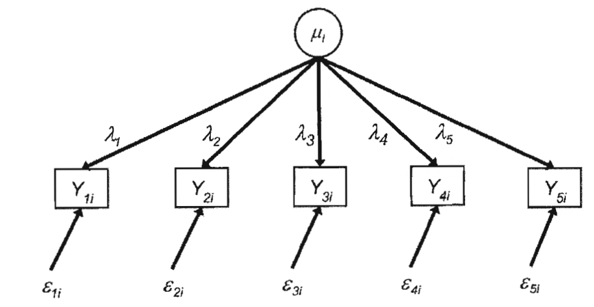

조사방법론. 4. 설문지
chapter 1. 설문지 작성 개요
설문조사는 응답자에 대한 다양한 정보를 수집하기 위해 여러 방식을 활용한다. 이 중 가장 일반적인 방법은 설문지를 사용하는 것이다. 설문지는 일정한 순서로 제시되는 표준화된 질문들로 구성되며, 대부분 고정된 선택지를 포함하고 있다. 이를 통해 응답자로부터 일관된 데이터를 얻을 수 있다.
오늘날 설문지는 점점 전자적인 형태로 변화하고 있다. 컴퓨터 프로그램이 설문지를 조사원에게 제공하거나, 응답자에게 직접 보여주는 방식이 증가하고 있다. 그러나 설문 방식이 종이이든 전자이든, 조사원이 있든 없든 대부분의 설문조사는 여전히 응답자가 정해진 질문을 해석하고 그에 맞는 정보를 제공하는 구조에 의존하고 있다.
모든 설문조사가 응답자에게 질문에 대한 답변을 직접 구성하도록 요구하는 것은 아니다. 예를 들어, 기업이나 기관을 대상으로 한 설문은 주로 기록에서 정보를 추출하며, 이 경우 설문지는 인터뷰 대본이라기보다 데이터 기록 양식에 가깝다. 면접자는 실제 응답자가 아닌 기록과 상호 작용하면서 필요한 정보를 수집할 수 있다.
교육 관련 설문에서는 학생의 성적 기록이 설문 데이터를 보완할 수 있고, 건강 관련 조사는 의료 기록을 활용함으로써 응답자의 진술에만 의존하는 것을 피할 수 있다. 이러한 경우에도 응답자는 기록에 접근할 수 있도록 협조하거나, 조사 담당자가 필요한 정보를 찾도록 도와주는 역할을 한다.
일부 조사는 사전에 관련 기록을 준비하도록 요청함으로써 보다 정확한 응답을 유도하기도 한다. 예를 들어, 건강 관련 조사를 앞두고 응답자에게 진료비 영수증이나 의료비 기록을 준비하도록 안내하면, 인터뷰 중 더 정확한 답변을 이끌어낼 수 있다. 다만 어떤 가정에서는 일상 지출을 체계적으로 기록하지 않기 때문에, 필요한 정보가 아예 존재하지 않을 수도 있다.
설문지는 응답자로부터 일관된 정보를 수집하는 데 핵심적인 역할을 하며, 설문조사의 가장 기본적인 도구로 사용된다. 동일한 질문을 모든 응답자에게 같은 방식으로 제시함으로써 비교 가능성을 높이고, 결과의 신뢰성을 확보할 수 있다. 닫힌 질문과 열린 질문을 적절히 구성함으로써, 응답자의 사고방식을 반영하고 정량적 또는 정성적 분석이 가능하도록 돕는다.
설문지는 면접 조사에서 조사원이 질문을 일관되게 제시할 수 있도록 안내 역할을 하며, 자기 기입식 조사에서는 응답자가 혼자서도 쉽게 이해하고 답변할 수 있도록 구성된다. 응답 내용을 체계적으로 기록하고 보관하는 기능도 수행하며, 디지털 설문지는 이 과정을 더욱 효율적으로 만들어준다.
또한, 응답자가 과거 경험을 회상할 수 있도록 특정 사건이나 시점을 제시하는 등 기억을 보조하는 역할도 수행한다. 의료비 지출과 같은 주제를 다룰 때는, 관련 기록을 참고하게 함으로써 보다 정확한 응답을 유도할 수 있다. 이외에도 설문지는 사람들의 행동이나 태도, 의견을 정량적으로 측정하는 데 사용된다. 리커트 척도와 같은 방식은 응답자의 주관적인 평가를 수치화하여 비교 분석을 가능하게 한다.
설문지는 면접 조사, 우편 설문, 온라인 조사, 전화 조사 등 다양한 방식으로 적용되며, 조사 방식에 따라 질문 순서나 난이도, 응답 인터페이스 등이 달라지기도 한다.
결국 설문지는 단순한 질문지를 넘어, 응답자의 반응을 유도하고 연구자가 원하는 정보를 효과적으로 수집하는 도구로 기능한다. 설문지 설계의 질은 전체 조사 결과의 신뢰성과 타당성을 결정짓는 중요한 요소가 된다.
chapter 2. 좋은 질문지 작성
좋은 설문지 작성 지침은 응답자의 부담을 줄이면서도 정확하고 신뢰할 수 있는 데이터를 확보하는 데 큰 도움이 된다. 이러한 데이터는 이후 연구, 정책 수립, 비즈니스 의사결정 등에서 보다 효과적인 결과를 도출하는 기반이 된다.
우선, 설문 조사는 응답 과정에서 다양한 오류가 발생할 수 있다. 질문이 모호하거나 복잡하면 응답자가 정확하게 이해하지 못하고 엉뚱한 답을 하거나, 기억에 의존해 부정확하게 응답하는 일이 생긴다. 때로는 사회적으로 바람직한 방향으로 응답하려는 경향도 나타난다. 좋은 설문지 지침은 이러한 오류를 줄이고, 응답의 일관성과 정확성을 높이는 데 기여한다.
설문 설계의 품질이 높아지면 수집되는 데이터의 신뢰성과 타당성도 향상된다. 질문이 명확하고 체계적으로 구성되면, 응답자는 자신의 경험이나 생각을 보다 정확하게 반영할 수 있다. 이로 인해 연구자는 실제 현상을 왜곡 없이 분석할 수 있고, 결과 해석의 정확도도 높아진다.
응답자의 입장에서 보면, 질문이 명확하고 간결할수록 설문을 보다 수월하게 작성할 수 있다. 반대로 질문이 길거나 복잡하면 응답 피로도가 높아지고, 설문을 끝까지 완료하지 않거나 무성의한 답변을 하게 될 위험이 커진다. 잘 구성된 설문지는 응답 부담을 낮추고, 자연스럽게 높은 응답률을 유도할 수 있다.
응답률이 높아지면 결과의 대표성도 향상된다. 이는 곧 전체 모집단을 보다 정확하게 반영하는 데이터 확보로 이어진다. 반면, 난해하거나 민감한 질문이 많을 경우 응답자가 중도에 설문을 포기할 수 있으므로, 질문 구성과 배열에도 세심한 주의가 필요하다.
설문으로 수집된 자료는 다양한 분석과 의사결정에 활용된다. 그러나 질문이 잘못 설계되면 데이터가 왜곡되고, 결과적으로 잘못된 판단이나 정책으로 이어질 수 있다. 따라서 질문은 연구 목적에 부합하도록 설계되어야 하며, 타당하고 신뢰할 수 있는 해석이 가능하도록 구성되어야 한다.
또한 설문 문항의 성격에 따라 적절한 접근 방식이 필요하다. 예를 들어, 행동을 묻는 질문은 구체적인 시점이나 상황을 제시해야 하며, 태도를 측정하는 질문은 명확한 척도와 함께 제시되어야 한다. 민감한 주제를 다룰 경우에는 응답자의 익명성과 프라이버시를 충분히 고려해야 한다. 질문 유형에 따라 각각 다른 원칙과 기법을 적용해야 하며, 이를 위해 명확한 설문지 작성 지침이 필요하다.
설문조사는 종종 연구 결과나 정책 제안서, 또는 기업 보고서에 인용된다. 따라서 설문 설계가 과학적이고 체계적이지 않다면 결과의 신뢰성이 떨어지고, 해당 결과를 활용하는 다양한 이해관계자들에게 부정적인 영향을 미칠 수 있다. 설문지 작성 지침은 단순히 문항을 구성하는 기술적 매뉴얼을 넘어, 설문 연구의 품질을 결정짓는 핵심 요소라 할 수 있다.
1. 행동문항과 태도 문항
개념적 차이
| 구분 | 행동 behavior 문항 | 태도 attitude 문항 |
| 정의 | 응답자의 실제 경험이나 행동을 측정하는 질문 | 응답자의 신념, 가치관, 감정, 의견 등을 측정하는 질문 |
| 목적 | 특정 행동을 수행한 빈도, 시기, 방식 등을 파악 | 특정 주제에 대한 태도나 선호도를 측정 |
| 측정 대상 | 객관적이고 구체적인 행동(실제 경험) | 주관적인 인식, 감정, 의견 |
| 기록 방식 | 응답자가 직접 보고한 행동(예: 구매경험, 운동빈도 등) | 응답자의 심리적 상태, 선호도 등을 측정 |
측정방법 차이
| 측정 방법 | 행동 문항 | 태도 문항 |
| 자기보고 | 응답자가 직접 자신의 행동을 보고 | 응답자가 자신의 의견을 보고 |
| 행동 기록 | 응답자가 일정 기간 동안 행동을 기록 (예: 음식섭취 일기) | 해당 없음 |
| 관찰법 | 연구자가 직접 응답자의 행동을 관찰 (예: 실제 투표 여부 확인) | 연구자가 응답자 태도를 직접 측정할 수 없음 |
| 반응 척도 | 행동 횟수, 빈도를 정량적으로 측정 (예: '한 달에 5회 이상') | Likert 척도, 시각적 아날로그 척도 등을 사용하여 태도를 정량적으로 측정 |
활용방안
| 연구 목적 | 행동 문항 | 태도 문항 |
| 실제 행동 측정 | 응답자가 특정 행동을 수행했는지 확인할 때 | 해당 없음 |
| 정책 평가 | 정책이 실제 행동 변화에 영향을 미쳤는지 측정할 때 | 정책에 대한 인식을 평가할 때 |
| 소비자 조사 | 제품 구매 빈도, 사용 습관 측정 | 브랜드 선호도, 만족도 평가 |
| 건강 연구 | 운동, 식습관, 흡연여부 조사 | 건강에 대한 인식, 위험에 대한 태도 측정 |
설문 조사에서 행동 문항과 태도 문항은 서로 다른 목적과 특성을 지니며, 응답 방식이나 인식에도 차이가 있다. 행동 문항은 응답자의 실제 경험이나 행위를 측정하는 데 중점을 두며, 객관적인 데이터를 수집하는 데 적합하다. 반면 태도 문항은 특정 주제에 대한 신념, 감정, 의견을 평가하는 데 활용되며, 응답자의 주관적인 인식을 파악하는 데 유리하다.
행동 문항은 특정 행동이 언제, 얼마나 자주, 어떤 방식으로 이루어졌는지를 묻는 것이 일반적이다. 예를 들어, “지난 한 달 동안 커피를 몇 번 구매하셨습니까?“와 같은 질문은 실제 경험을 기반으로 한 응답을 이끌어내기 위한 전형적인 행동 문항이다. 이에 비해, “당신은 커피를 마시는 것이 건강에 좋다고 생각하십니까?“는 응답자의 생각이나 판단을 묻는 태도 문항에 해당한다.
행동 문항은 실재 경험에 기초하기 때문에 응답의 객관성이 상대적으로 높을 수 있지만, 응답자가 모든 경험을 정확히 기억하지 못할 가능성도 고려해야 한다. 예를 들어, “지난 6개월 동안 술을 얼마나 자주 마셨습니까?“와 같은 질문에서는 과거나 현재의 행동을 과장하거나 축소해 응답하는 경향이 나타날 수 있다. 반대로, 태도 문항은 응답자의 감정 상태나 환경적 요인에 따라 동일한 질문에도 답변이 달라질 수 있다. “술을 마시는 것이 사회적 관계에 도움이 된다고 생각하십니까?“라는 질문은 개인의 가치관에 따라 매우 다른 반응이 나올 수 있다.
두 문항 유형은 질문 구성 방식에서도 차이를 보인다. 행동 문항은 구체적인 시간 범위와 빈도를 포함해야 응답자가 명확하게 답할 수 있다. 예를 들어, “최근에 운동한 적이 있습니까?“는 다소 모호한 반면, “지난 7일 동안 30분 이상 운동한 날이 며칠입니까?“는 보다 구체적인 정보를 요구하여 응답의 정확성을 높일 수 있다. 태도 문항은 주로 Likert 척도와 같은 평가 척도를 활용하여 응답자의 생각이나 입장을 수치화할 수 있도록 설계된다. 예를 들어, “당신은 정부의 환경 보호 정책을 얼마나 지지하십니까?“라는 문항은 5점 또는 7점 척도를 통해 응답을 정량화할 수 있다.
행동 문항을 설계할 때는 응답자가 기억하기 쉬운 시간 기준을 사용하는 것이 중요하다. “지난 1년 동안 해외여행을 몇 번 다녀오셨습니까?“보다 “2024년 1월 이후 해외여행을 몇 번 다녀오셨습니까?“와 같이 명확한 시점을 제시하면 보다 정확한 응답을 유도할 수 있다. 또한, 행동 문항의 신뢰도를 높이기 위해 영수증, 일정표 등 실제 자료를 참조하도록 안내하는 것도 좋은 방법이다.
태도 문항에서는 사회적 바람직성 편향을 줄이는 것이 중요하다. 예를 들어, “당신은 환경 보호를 중요하게 생각하십니까?“와 같은 질문은 응답자가 사회적으로 바람직한 방향으로 답할 가능성이 높다. 이때, “최근 6개월 동안 환경 보호를 위해 어떤 행동을 하셨습니까?“와 같이 구체적인 행동을 확인할 수 있는 보조 문항을 추가하면 응답의 신뢰도를 높일 수 있다. 또한, 태도 문항은 앞뒤 문항의 영향을 받을 수 있으므로, 설문지의 흐름과 문항 배열에도 주의를 기울여야 한다.
행동 문항과 태도 문항은 연구 목적에 따라 적절히 선택하여 사용해야 한다. 행동 문항은 실제 행위를 파악하는 데 적합하여 정책 효과 분석, 소비 패턴 연구, 건강 행동 연구 등에 활용된다. 예를 들어, “지난 선거에서 투표를 하셨습니까?“와 같은 문항은 실제 참여 여부를 측정할 수 있다. 반면, 태도 문항은 개인의 가치관이나 인식을 이해하는 데 유용하며, 사회 문제 인식 조사나 브랜드 이미지 조사 등에 자주 사용된다. 예를 들어, “당신은 선거 참여가 중요하다고 생각하십니까?“는 정치적 태도를 분석하는 데 적합한 문항이다.
이처럼 행동 문항과 태도 문항은 각기 다른 역할을 수행하며, 상황에 맞게 잘 설계되었을 때 설문조사의 타당성과 신뢰도를 크게 높일 수 있다.
2. 행동문항: 민감하지 않은 질문
민감하지 않은 질문이라 하더라도, 응답자의 기억력에 한계가 있을 수 있기 때문에 보다 정확하고 신뢰성 높은 데이터를 얻기 위해서는 설문 설계 시 세심한 전략이 필요하다. 특히, 응답자가 질문을 혼동하지 않도록 질문을 구체적이고 명확하게 제시하고, 필요한 경우 과거의 기억을 떠올릴 수 있도록 돕는 자극 요소를 함께 제공하는 것이 효과적이다.
예를 들어, 특정 시기나 사건을 기준으로 삼아 질문을 제시하거나, 응답자가 참고할 수 있는 일정표, 영수증, 가계부 등과 같은 보조 자료를 활용하도록 유도하면 기억에 의존한 응답의 정확도를 크게 높일 수 있다. 이처럼 응답자의 회상을 돕는 다양한 도구와 설계 기법을 적용함으로써, 사소하거나 잊기 쉬운 정보에 대해서도 신뢰할 수 있는 응답을 이끌어낼 수 있다.
폐쇄형 질문에서는 모든 합리적인 가능성을 응답 보기에 포함할 것
폐쇄형 질문(closed-ended questions)은 응답자가 자유롭게 서술하기보다, 미리 제시된 선택지 중에서 가장 적절하다고 생각되는 답을 고르도록 설계된 질문 유형이다. 이러한 질문은 응답 결과를 정량적으로 분석하기 용이하다는 장점이 있으며, 조사자 간의 해석 차이나 데이터 정제 과정의 오류를 줄이는 데도 유리하다.
하지만 응답자가 자신의 경험과 가장 일치하는 선택지를 찾을 수 있도록, 가능한 모든 합리적 응답 옵션이 빠짐없이 포함되어야 한다. 예를 들어, “지난 한 달 동안 외식한 횟수는?”이라는 질문을 제시할 때, 보기로는 0회, 1–2회, 3–4회, 5회 이상과 같이 모든 응답 범주를 포괄할 수 있어야 하며, 누락되거나 겹치는 구간이 없어야 한다. 이렇게 구성된 질문은 응답자의 선택을 쉽게 하고, 결과 해석의 명확성도 높여준다.
질문을 가능한 한 구체적으로 만들 것
질문이 모호하게 제시되면, 응답자는 각자의 경험과 기준에 따라 질문을 다르게 해석하게 되고, 그 결과 응답의 일관성과 비교 가능성이 떨어질 수 있다. 예를 들어, “운동을 얼마나 자주 하십니까?”라는 질문은 매우 일반적이고 추상적인 표현이기 때문에, 어떤 사람은 일주일에 한두 번 하는 것을 ’자주’라고 생각할 수 있고, 또 다른 사람은 하루에 한 번 이상 해야 ’자주’라고 느낄 수 있다. 이처럼 해석의 기준이 응답자마다 다를 경우, 수집된 데이터의 정확성과 신뢰성이 저하될 수 있다.
따라서 질문은 응답자가 같은 기준으로 이해하고 답변할 수 있도록 구체적이고 명확하게 설계하는 것이 중요하다. 예컨대, “지난 7일 동안 30분 이상 신체 활동을 한 날은 며칠입니까?”처럼 시간 범위와 활동 기준을 함께 제시하면, 응답자는 자신의 경험을 보다 정확하게 회상하고 일관된 기준에 따라 응답할 수 있다. 이와 같은 질문 설계는 응답 해석의 차이를 줄이고 데이터 품질을 높이는 데 효과적이다.
거의 모든 응답자가 이해할 수 있는 단어를 사용할 것
설문 문항에 전문 용어나 지나치게 어려운 단어가 포함되면, 응답자가 질문의 의미를 정확히 이해하지 못하고 의도와 다른 답변을 할 가능성이 높아진다. 이는 특히 일반 대중을 대상으로 한 조사에서 자주 발생할 수 있으며, 데이터의 신뢰도와 해석의 정확성을 크게 떨어뜨릴 수 있다.
예를 들어, “귀하는 주간 단위로 주거 이동을 하나요?”라는 문장은 일부 응답자에게 생소하거나 난해하게 느껴질 수 있다. 반면, 같은 내용을 보다 쉽게 표현한 “한 주 동안 다른 곳에서 머문 적이 있나요?”라는 문장은 일상적인 언어를 사용해 응답자가 질문을 명확히 이해하고 답할 수 있도록 돕는다.
또한, 문화적 배경에 따라 다르게 해석될 수 있는 단어나 표현은 가급적 피해야 한다. 특정 지역이나 계층에서만 통용되는 표현은 설문 대상자 전체에게 일관된 이해를 제공하기 어렵기 때문이다. 따라서 모든 응답자가 비슷한 방식으로 해석할 수 있도록, 쉬운 언어로 표현하고 문화적 중립성을 유지하는 것이 설문 문항 설계의 기본 원칙 중 하나이다.
기억을 향상시키기 위해 기억 단서를 추가하여 질문을 길게 만들 것
응답자가 과거의 특정 사건을 정확히 기억해내기 어려운 경우, 질문에 기억을 자극하는 단서를 함께 제공하면 응답의 정확성을 높일 수 있다. 사람들은 일상적으로 경험한 사건이라 하더라도 시간이 지나면 세부 내용을 잊어버릴 수 있으며, 특히 빈도가 낮거나 중요도가 높지 않은 사건일수록 그 경향이 뚜렷하다.
예를 들어, “지난 6개월 동안 해외여행을 다녀온 적이 있습니까?”라는 질문은 포괄적으로 보일 수 있으나, 응답자가 기억하지 못한 경험을 빠뜨릴 가능성이 있다. 이때 “업무 출장, 가족여행, 친구와의 여행, 유학 등 포함”과 같이 다양한 유형의 여행 사례를 함께 제시하면, 응답자가 자신의 경험을 더 쉽게 회상할 수 있고, 누락 없이 답변할 가능성이 높아진다.
이러한 방식은 질문을 보다 구체적이고 현실적인 맥락 안에서 이해하도록 도와주며, 결과적으로 설문 데이터의 질을 향상시키는 데 기여한다.
잊어버릴 가능성이 높을 때는 도움 회상을 사용할 것
사람들은 일상에서 다양한 경험을 하며, 그중 일부는 시간이 지나면서 자연스럽게 잊혀질 수 있다. 특히 자주 발생하지 않거나 특별히 주의를 기울이지 않았던 사건에 대해서는 기억이 흐릿해지기 쉽다. 이러한 경우, 설문에서 정확한 정보를 얻기 위해서는 응답자의 기억을 돕는 회상 기법을 적절히 활용하는 것이 필요하다.
예를 들어, “지난 3개월 동안 병원에 방문한 적이 있습니까?”라는 질문에 응답자가 확실하게 기억하지 못하는 상황이 있을 수 있다. 이럴 때 “가족 병원 방문, 정기 건강검진, 치과 진료, 응급실 방문 포함”과 같이 구체적인 사례나 유형을 제시하면, 응답자가 해당 경험을 떠올리는 데 도움이 되며, 그 결과 더 정확하고 신뢰할 수 있는 응답을 얻을 수 있다.
이러한 회상 자극은 응답 누락이나 부정확한 답변을 줄이는 데 효과적이며, 설문조사 데이터의 품질을 높이는 중요한 전략 중 하나로 활용될 수 있다.
빈번하지만 크게 중요하지 않은 경우, 응답자가 일지를 작성 유도
일상에서 자주 일어나지만 중요도가 낮아 쉽게 잊히는 행동이나 사건에 대해서는, 설문 시 응답의 정확성을 확보하기가 쉽지 않다. 예를 들어, 간식 섭취, 대중교통 이용, 소액 지출 등은 자주 일어나지만 응답자가 구체적으로 기억하지 못할 가능성이 크다. 이런 경우에는 사전에 기록을 남기도록 안내함으로써, 설문 시 보다 정확한 정보를 제공받을 수 있다.
예를 들어, 조사 시작 전 일정 기간 동안 응답자에게 간단한 일지나 체크리스트를 작성하도록 요청하면, 특정 행동에 대한 기억을 체계적으로 보존할 수 있다. 매일 섭취한 음식, 사용한 교통수단, 지출한 항목 등을 기록하게 하면, 설문조사 시 응답자는 이를 참고해 보다 정확한 응답을 제공할 수 있으며, 조사 결과의 신뢰성과 정밀도도 함께 향상된다.
이러한 사전 기록 활용은 조사 대상의 특성에 따라 유연하게 적용할 수 있으며, 특히 생활습관, 소비행동, 건강 관련 조사의 정밀도를 높이는 데 유용한 방법이다.
긴 회상 기간이 필요한 경우, 생애 사건 달력을 사용 권장
조사에서 긴 기간에 걸친 기억을 회상해야 할 때는, 응답자의 기억이 흐릿해져 정확한 응답을 기대하기 어려운 경우가 많다. 예를 들어, 지난 1년간의 의료 이용 횟수처럼 시간적 범위가 길고 사건의 발생 시점이 분산된 경우, 응답자는 정확한 시기를 떠올리기 어려울 수 있다. 이런 경우에는 생애 사건 달력(life event calendar)과 같은 도구를 활용하여 응답자의 기억을 자극하는 것이 효과적이다.
예를 들어, “작년 초에 병원에 간 적이 있나요?”처럼 막연한 시기를 제시하기보다는 “설 연휴 이후, 여름휴가 기간, 추석 이후에 병원에 방문한 적이 있나요?”처럼 사회적으로 널리 인식되는 기준 시점을 활용하면, 응답자가 과거 경험을 특정 시점에 연결해 더 정확하게 회상할 수 있다.
이러한 방식은 단순한 시간 기준보다 현실적인 단서를 제공하기 때문에, 장기 회상이 필요한 설문조사에서 응답 오류를 줄이고, 데이터의 정확성과 신뢰성을 높이는 데 효과적인 전략이 될 수 있다.
망원경 오류를 줄이기 위해 응답자가 가계 기록을 사용
망원경 오류는 사람들이 실제 사건이 발생한 시기를 정확히 기억하지 못하고, 과거의 일을 더 최근의 일로 기억하거나, 반대로 최근에 일어난 일을 오래전에 있었던 일로 착각하는 현상을 의미한다. 이러한 오류는 특히 회상 기간이 길거나 사건이 반복적으로 발생했을 때 자주 나타나며, 응답 데이터의 시점 정확도를 떨어뜨릴 수 있다.
이러한 오류를 줄이기 위해서는 응답자가 자신이 경험한 사건의 시점을 보다 명확히 인식할 수 있도록 도와주는 전략이 필요하다. 예를 들어, 설문 응답 시 영수증, 일정표, 가계부 등과 같은 실제 기록을 참고하도록 유도하면, 응답자가 막연한 기억에 의존하지 않고 보다 구체적인 정보를 제공할 수 있게 된다.
또한, 명확한 시간 기준을 제시하는 경계 회상 기법을 함께 활용하면 효과적이다. “올해 1월 1일 이후”나 “2024년 7월 이후”와 같은 기준점을 제공하면, 응답자는 해당 시점을 중심으로 기억을 정리하고 보다 정확한 시기 판단을 할 수 있어, 전체적인 응답 오류를 줄이는 데 도움이 된다.
비용이 문제가 되는 경우, 대리 응답자를 활용할 것
설문조사에서 응답자의 기억이 부정확하거나, 조사 비용과 시간을 절감할 필요가 있을 때는 해당 정보를 더 잘 알고 있는 대리 응답자(proxy respondent)를 통해 답변을 받는 방법을 사용할 수 있다. 이는 특히 가구 단위 조사나 조직 내부 조사의 경우에 효과적인 전략으로, 일부 응답자가 세부적인 내용을 정확히 기억하지 못할 때 유용하게 활용된다. 예를 들어, 가계 소비 조사에서 가족 구성원이 자신의 지출 내역을 잘 기억하지 못할 경우, 가계 예산을 실제로 관리하고 있는 가족 구성원이 다른 구성원을 대신해 응답함으로써 전체적인 소비 정보를 보다 정확하게 수집할 수 있다.
하지만 대리 응답 방식은 정보의 정확성을 담보하지 않는 한계도 함께 내포하고 있다. 대리 응답자가 실제로 얼마나 정확한 정보를 알고 있는지를 검토하는 과정이 병행되어야 하며, 경우에 따라 보완 질문이나 확인 절차가 필요할 수 있다. 만약 대리 응답자가 본인의 추측에 근거해 답변하거나 일부 정보만 알고 있는 상태라면, 수집된 데이터의 신뢰성과 타당성이 낮아질 수 있다. 따라서 대리 응답은 신중하게 적용되어야 하며, 응답의 품질을 확보하기 위한 장치도 함께 고려해야 한다.
3. 행동문항: 민감한 질문
민감한 질문을 포함하는 설문조사에서는 응답자의 심리적 불편함이나 저항감을 최소화하는 것이 매우 중요하다. 응답자가 부담을 느끼거나 불안감을 갖게 되면 질문에 대해 회피하거나 왜곡된 정보를 제공할 가능성이 높아지기 때문이다. 이러한 문제를 줄이기 위해, 질문을 보다 중립적인 언어로 표현하거나, 간접적인 방식으로 묻는 전략을 사용할 수 있다. 또한, 응답의 익명성과 비밀 보장이 철저히 이루어진다는 점을 사전에 안내하면, 응답자가 보다 솔직하게 자신의 생각이나 경험을 공유할 가능성이 높아진다.
이와 함께, 응답의 신뢰도를 높이기 위한 다양한 보완 기법을 활용하는 것도 중요하다. 예를 들어, 민감한 문항을 설문지 후반부에 배치하거나, 자기기입 방식 또는 전산화된 응답 시스템을 도입하면 응답자가 심리적 부담 없이 답할 수 있는 환경을 조성할 수 있다. 이러한 전략을 적절히 적용하면 민감한 주제에 대해서도 보다 정밀하고 신뢰할 수 있는 데이터를 수집할 수 있으며, 이는 궁극적으로 연구의 타당성과 정책 수립의 실효성을 높이는 데 기여할 수 있다.
민감한 행동의 빈도를 파악할 때 개방형 질문을 사용할 것
민감한 행동에 대해 질문할 때, 응답자에게 정해진 선택지를 고르게 하기보다 스스로 자유롭게 경험을 서술할 수 있는 기회를 제공하면, 응답의 진실성과 정확성을 높일 수 있다. 폐쇄형 질문은 응답자의 민감함을 자극하거나 방어적인 태도를 유발할 수 있지만, 개방형 질문은 보다 편안한 분위기에서 자신의 경험을 표현하게 하여 왜곡 가능성을 줄여준다.
예를 들어, “지난 6개월 동안 몇 번 음주했습니까?”라고 직접적으로 횟수를 묻는 대신, “지난 6개월 동안 음주한 경험에 대해 설명해 주세요.”와 같이 질문을 보다 개방적이고 서술적으로 제시하면, 응답자는 스스로 기억을 떠올리며 자신의 상황에 맞게 보다 자연스럽고 솔직한 답변을 할 가능성이 높다. 이러한 방식은 특히 민감하거나 사적인 영역의 행동을 조사할 때 유용하며, 응답의 신뢰도를 높이는 데 도움이 된다.
짧은 질문보다는 긴 질문을 사용할 것
짧고 간단한 질문은 응답자의 이해를 돕는 데 효과적일 수 있지만, 경우에 따라 오해를 불러일으키거나 질문의 의도를 제대로 전달하지 못할 위험도 함께 존재한다. 특히 민감하거나 구체적인 행동을 묻는 경우, 질문이 지나치게 간단하면 응답자가 질문의 범위나 맥락을 정확히 이해하지 못해 부정확한 답변을 할 가능성이 높아진다.
이런 경우에는 보다 긴 문장을 사용해 질문의 맥락과 내용을 구체적으로 설명하는 것이 바람직하다. 예를 들어, 단순히 “마약을 사용한 적이 있습니까?”라고 묻는 것보다, “지난 12개월 동안 의사의 처방 없이 마약(예: 코카인, 대마초, 헤로인 등)을 사용한 적이 있습니까?”처럼 질문의 범위, 기간, 예시를 명확히 제시하면, 응답자는 질문을 보다 정확하게 이해하고 신중하게 답할 수 있다. 이는 설문 데이터의 신뢰성과 해석 가능성을 높이는 데도 도움이 된다.
민감한 행동을 설명할 때 익숙한 단어를 사용할 것
설문 문항을 작성할 때는 응답자가 쉽게 이해할 수 있는 일상적인 단어를 사용하는 것이 기본이다. 전문 용어나 생소한 표현은 혼란을 줄 수 있고, 특히 민감한 주제의 경우 단어 선택이 응답자의 심리적 저항을 유발할 수 있다. 따라서 가능하면 응답자가 익숙하게 받아들일 수 있는 언어로 질문을 구성해야 한다.
예를 들어, “음주 습관”이라는 표현은 다소 공식적이고 평가적인 뉘앙스를 줄 수 있지만, “술을 마신 경험”이라는 표현은 보다 자연스럽고 부담 없이 받아들여질 수 있다. 마찬가지로, “불법 약물 사용”이라는 표현은 응답자에게 심리적 압박을 줄 수 있는 반면, “기분 전환을 위한 약물 복용”처럼 완화된 표현을 사용하면 보다 솔직한 응답을 유도하는 데 도움이 된다. 이러한 언어적 배려는 응답자의 거부감을 줄이고, 설문 응답의 질을 높이는 데 중요한 역할을 한다.
허위 응답을 줄이기 위해 의도적으로 질문을 구성할 것
민감한 주제를 다룰 때는 응답자가 정직하게 답할 수 있도록 질문을 신중하게 구성하는 것이 매우 중요하다. 질문이 너무 직설적이거나 판단적인 어투를 담고 있으면, 응답자는 심리적으로 위축되거나 방어적인 태도를 보일 수 있으며, 이로 인해 정확한 정보를 얻기 어려워질 수 있다.
예를 들어, “당신은 불법적으로 마약을 사용한 적이 있습니까?”처럼 직접적이고 비판적으로 들릴 수 있는 질문보다는, “많은 사람들이 스트레스 해소를 위해 마약을 사용합니다. 당신은 지난 6개월 동안 마약을 사용한 경험이 있습니까?”처럼 사회적 낙인을 완화하는 문구를 함께 제시하면, 응답자는 자기 행동에 대해 덜 비난받는다고 느끼고 보다 솔직하게 답변할 가능성이 높아진다. 이러한 접근은 민감한 정보의 응답률과 정확도를 높이는 데 효과적인 전략이 된다.
과거의 먼 시점을 먼저 질문할 것
민감한 주제를 다룰 때는 질문의 순서를 전략적으로 구성하는 것이 응답자의 부담을 줄이는 데 도움이 된다. 특히 최근의 행동이나 경험을 곧바로 묻는 것보다는, 비교적 덜 민감하게 느껴질 수 있는 과거의 경험부터 질문을 시작하는 것이 효과적이다. 이를 통해 응답자는 민감한 주제에 대해 심리적으로 준비할 시간을 갖고, 점진적으로 질문에 익숙해질 수 있다.
예를 들어, “지난 1년 동안 도박을 한 적이 있습니까?”라고 바로 묻기보다는, “어릴 때 가족이나 친구들과 함께 카지노나 내기 게임을 한 경험이 있습니까?”와 같이 과거의 경험을 먼저 묻는 방식이 응답자의 방어심을 낮추는 데 도움이 된다. 이렇게 점진적인 질문 흐름을 구성하면, 이후 보다 민감한 질문에 대해서도 응답자가 부담을 덜 느끼고 정직하게 답변할 가능성이 높아진다.
민감한 질문을 다른 민감한 항목들 사이에 포함
민감한 질문을 설문에 포함시킬 때는, 응답자가 해당 질문을 특별히 부담스럽게 느끼지 않도록 질문의 배치 순서와 문맥을 신중하게 설계하는 것이 중요하다. 민감한 문항이 갑작스럽게 등장하면 응답자가 방어적인 태도를 보이거나 응답을 회피할 수 있으므로, 주변 질문들과의 자연스러운 연결을 통해 해당 문항이 눈에 띄지 않도록 하는 전략이 필요하다.
예를 들어, 음주에 관한 질문을 직접적으로 제시하기보다 “평소에 즐겨 마시는 음료는 무엇인가요?”, “지난 한 달 동안 커피를 얼마나 자주 마셨습니까?”와 같은 일반적인 음료 소비 질문들과 함께 배치하고, 그 중 하나로 “지난 한 달 동안 술을 얼마나 자주 마셨습니까?”를 포함시키면, 응답자는 해당 질문을 덜 민감하게 느끼고 자연스럽게 답변할 가능성이 높아진다. 이러한 배치는 설문 흐름의 부드러움을 유지하면서도 응답의 신뢰도를 높이는 데 도움이 된다.
자기기입 방식 또는 유사한 방법을 사용할 것
민감한 주제를 다루는 설문에서는 응답 환경이 응답의 정확도에 큰 영향을 미친다. 특히 조사원이 직접 질문을 제시하는 면접 방식에서는, 응답자가 타인의 시선을 의식해 솔직하게 답변하지 않거나, 사회적으로 바람직한 방향으로 응답을 왜곡할 가능성이 높다. 이러한 경우 조사 방식 자체가 심리적 장벽이 되어 응답의 질을 저하시킬 수 있다.
이러한 문제를 줄이기 위해, 응답자가 스스로 질문에 답하는 자기기입 방식이 효과적으로 활용된다. 예를 들어, 온라인 설문조사, 컴퓨터를 이용한 자기기입식 조사(CASI), 종이 설문지를 활용한 자기기입식 방식 등은 조사원과의 직접적인 대면이 없기 때문에, 응답자가 보다 편안한 환경에서 자신의 경험이나 생각을 솔직하게 표현할 수 있게 해준다. 결과적으로 이러한 방식은 민감한 문항에 대한 응답률과 정확도를 높이는 데 유리하다.
데이터를 수집할 때 일기 형식을 고려할 것
민감한 행동에 관한 질문은 응답자가 의도적으로 왜곡된 정보를 제공하거나, 정확히 기억하지 못해 잘못된 응답을 하는 경우가 많다. 특히 음주, 흡연, 약물 사용, 성행동 등과 같이 사회적 평가와 관련된 주제는 응답자가 자신의 행동을 축소하거나 과장해서 보고할 가능성이 높다. 이로 인해 설문 데이터의 정확성과 신뢰도가 떨어질 수 있으며, 결과 해석에도 한계가 생긴다.
이러한 문제를 보완하기 위한 방법으로, 응답자에게 일기 형식의 기록을 요청하는 전략이 효과적이다. 예를 들어, 음주 행동을 조사할 때 설문 이전 일정 기간 동안 매일 마신 술의 종류와 양을 직접 기록하도록 안내하면, 단 한 번의 회상에 의존하는 방식보다 훨씬 더 정밀하고 신뢰도 높은 정보를 확보할 수 있다. 이러한 방식은 특히 반복적이고 일상적인 행동을 측정할 때 유용하며, 민감한 주제에 대한 응답의 왜곡 가능성을 줄이는 데도 큰 도움이 된다.
설문지의 끝부분에 응답 민감 항목에 대한 추가 문항 구성
응답자가 설문에 답하는 과정에서 어떤 문항을 특히 민감하게 느꼈는지를 확인하는 것은, 전체 응답의 신뢰도를 높이고 설문 도구의 완성도를 향상시키는 데 도움이 된다. 민감한 질문에 대해 응답자가 실제로 어떤 수준의 불편함을 느꼈는지를 파악함으로써, 향후 설문 설계 시 해당 문항의 표현 방식이나 위치, 방식 등을 개선할 수 있는 근거 자료를 확보할 수 있다.
예를 들어, 설문 마지막에 “설문에서 가장 대답하기 어려웠던 질문은 무엇이었습니까?”, “이 설문에서 불편함을 느낀 부분이 있다면 자유롭게 적어주세요”와 같은 질문을 추가하면, 응답자의 심리적 반응에 대한 피드백을 직접 수집할 수 있다. 이러한 정보를 바탕으로 민감도를 높이는 요소를 조정하거나 응답 환경을 개선하면, 이후 조사에서는 보다 솔직하고 신뢰성 높은 응답을 이끌어낼 수 있다.
검증 데이터를 수집할 것
설문조사를 통해 수집된 응답이 실제 행동이나 사실을 정확하게 반영하고 있는지를 확인하기 위해, 추가적인 검증 데이터를 함께 수집하는 것이 중요하다. 응답자는 무심코 기억을 잘못하거나, 사회적 압박으로 인해 의도적으로 사실을 왜곡할 수도 있기 때문에, 단지 설문 응답에만 의존하는 것은 데이터의 신뢰성을 저하시킬 위험이 있다.
예를 들어, 음주 습관에 관한 조사를 실시할 때 응답자가 보고한 음주 빈도나 종류와 실제 구입 내역(예: 술 구매 영수증)을 비교하면, 응답의 정확성을 검토할 수 있다. 이러한 검증 절차는 조사 과정에서 발생할 수 있는 응답 오류나 왜곡을 줄이는 데 도움이 되며, 전체 조사 결과의 신뢰도와 타당성을 한층 높여준다. 경우에 따라 기록 자료, 관찰 데이터, 제3자의 보고 등 다양한 방식으로 보완 자료를 확보하는 것도 효과적인 전략이 될 수 있다.
4. 태도문항
태도의 대상을 명확하게 지정할 것
태도 문항을 설계할 때는 응답자가 어떤 대상이나 상황에 대해 자신의 의견을 표현하는지 명확하게 이해할 수 있도록 질문을 구체적으로 구성하는 것이 중요하다. 질문이 모호하거나 지나치게 포괄적이면, 응답자는 각기 다른 해석을 바탕으로 답하게 되어 응답 간 비교가 어려워지고, 설문 결과의 타당성이 낮아질 수 있다.
예를 들어, “환경 보호 정책에 대해 어떻게 생각하십니까?”라는 질문은 환경 문제 전반에 대한 광범위한 해석을 유도할 수 있어 응답자의 인식 차이를 제대로 반영하기 어렵다. 대신, “정부의 일회용 플라스틱 사용 제한 정책에 대해 어떻게 생각하십니까?”처럼 구체적인 정책이나 행동을 명시하면, 응답자는 보다 명확한 판단 기준에 따라 의견을 표현할 수 있게 된다. 이는 태도 측정의 정확도와 응답 해석의 일관성을 높이는 데 도움이 된다.
이중 질문을 피할 것
이중 질문(double-barreled question)은 하나의 문항에 두 개 이상의 서로 다른 개념이나 주제가 포함되어 있어, 응답자가 하나의 명확한 답변을 하기 어렵게 만드는 질문을 의미한다. 이러한 질문은 응답자의 의도를 정확히 파악하기 어렵게 만들고, 결과적으로 데이터의 신뢰성과 해석력을 떨어뜨리는 요인이 된다. 특히 응답자가 두 개의 주제에 대해 상반된 태도를 가지고 있을 경우, 어떤 부분에 대해 긍정 또는 부정을 표시했는지 명확히 알 수 없게 된다.
예를 들어, “귀하는 정부의 환경 보호 정책과 경제 성장 전략을 지지하십니까?”라는 질문은 환경 보호 정책에는 찬성하지만 경제 성장 전략에는 반대하는 응답자에게 혼란을 줄 수 있다. 이 경우, “귀하는 정부의 환경 보호 정책을 지지하십니까?”와 “귀하는 정부의 경제 성장 전략을 지지하십니까?”처럼 각 개념을 별도의 문항으로 분리해 묻는 것이 바람직하다. 이를 통해 응답자는 각 항목에 대해 보다 정확하게 자신의 입장을 표현할 수 있으며, 조사자는 더 신뢰도 높은 자료를 확보할 수 있다.
필요하다면 개별 문항을 사용하여 태도의 강도를 측정할 것
태도 조사를 보다 정밀하게 수행하려면, 단순히 찬성이나 반대 여부만을 묻는 이분법적인 질문 방식에서 벗어나, 응답자의 태도 강도를 세분화하여 측정할 수 있는 척도를 사용하는 것이 중요하다. 찬성과 반대는 방향만을 나타낼 뿐, 그 정도나 확신의 수준을 반영하지 못하므로, 응답자의 입장을 충분히 해석하는 데 한계가 있을 수 있다.
예를 들어, “귀하는 이 정책에 찬성하십니까?”처럼 단순하게 묻는 대신, “귀하는 이 정책을 얼마나 강하게 찬성 또는 반대하십니까?”와 같은 질문을 제시하고, ‘매우 찬성’, ‘약간 찬성’, ‘중립’, ‘약간 반대’, ‘매우 반대’ 등으로 구성된 리커트 척도를 활용하면, 응답자의 태도를 더 구체적이고 정량적으로 파악할 수 있다. 이러한 방식은 정책 수립이나 여론 분석 시 보다 섬세한 해석과 비교를 가능하게 하며, 태도 연구의 질을 높이는 데 기여한다.
주요 정보를 놓칠 가능성이 있는 경우 제외하고 양극 항목을 사용할 것
양극 항목(bipolar scale)은 응답자가 긍정적인 평가와 부정적인 평가 중에서 자신의 생각에 가장 가까운 선택지를 고를 수 있도록, 양쪽 극단을 모두 포함하는 응답 척도를 의미한다. 이러한 척도는 응답자의 태도 강도와 방향을 함께 파악할 수 있다는 점에서 유용하며, 태도의 분포나 변화 정도를 정밀하게 분석하는 데 적합하다. 예를 들어, “귀하는 정부의 환경 보호 정책을 얼마나 효과적이라고 생각하십니까?”라는 질문에 대해 ‘매우 효과적이다’, ‘효과적이다’, ‘보통이다’, ‘효과적이지 않다’, ’전혀 효과적이지 않다’처럼 긍정에서 부정까지 연속적인 범위를 제공하면, 다양한 응답자의 입장을 반영할 수 있다.
그러나 모든 상황에서 양극 항목이 반드시 적절한 것은 아니다. 특정 문항에서는 응답자가 명확하게 긍정적인 방향에서만 평가하도록 유도하거나, 중립적인 선택지가 불필요한 경우도 있을 수 있다. 반대로, 중립적 입장을 유지하고자 하는 응답자를 위해 ‘보통이다’ 혹은 ’잘 모르겠다’와 같은 응답 옵션을 제공하는 것이 적절할 때도 있다. 따라서 척도의 구성은 조사 목적과 문항의 성격에 따라 신중하게 조정되어야 하며, 응답자가 자신의 의견을 왜곡 없이 표현할 수 있도록 돕는 방향으로 설계해야 한다.
응답 보기는 응답 가능한 선택을 모두 포함하고 있어야 한다.
설문에서 제시하는 응답 옵션은 응답자의 선택에 직접적인 영향을 미치기 때문에, 옵션의 구성은 질문의 신뢰성과 타당성을 좌우하는 중요한 요소가 된다. 응답자가 자신의 상황에 맞는 선택지를 찾지 못하면, 임의로 가장 가까운 항목을 선택하거나 응답을 포기할 수 있으며, 이는 데이터의 왜곡이나 누락으로 이어질 수 있다. 따라서 응답 항목은 가능한 현실적인 대안을 충분히 반영하도록 신중하게 설계되어야 한다.
예를 들어, “귀하는 주로 어떤 교통수단을 이용합니까?”라는 질문에 ’자전거 — 버스 — 지하철 — 자동차’만 제시된다면, 실제로 기차나 도보를 주로 이용하는 사람은 자신의 경험과 일치하는 응답을 선택하기 어렵다. 이런 경우를 대비해 가능한 교통수단을 포괄적으로 포함하거나, “기타 (직접 입력)” 항목을 함께 제공하면, 응답자의 다양성을 반영하고 데이터의 완전성을 높이는 데 도움이 된다. 응답 옵션 설계 시 응답자의 입장에서 선택 가능성을 충분히 고려하는 것이 바람직하다.
시간에 따른 변화를 측정할 때는 매번 동일한 질문을 사용할 것
시간의 흐름에 따른 태도 변화를 측정할 때는, 동일한 질문에 대해 시점만 다르게 반복해 물어야 비교가 가능한 데이터가 수집된다. 질문의 문구나 표현 방식이 달라지면, 응답자는 각 질문을 다르게 해석할 수 있고, 그로 인해 실제 태도 변화가 아닌 질문 형식의 차이로 인해 응답 결과가 달라질 수 있다. 이는 설문조사의 신뢰성과 해석 가능성을 떨어뜨리는 주요한 원인이 된다.
예를 들어, “지난해 환경 보호 정책에 대한 귀하의 태도는 어땠습니까?”와 “올해 환경 보호 정책에 대한 귀하의 태도는 어떻습니까?”는 내용상 유사해 보이지만, 질문의 표현 방식이나 문장 구조가 달라지면 응답자가 미묘하게 다르게 이해할 수 있다. 따라서 시계열 조사나 반복 조사에서는 질문의 문구를 가능한 한 동일하게 유지해야 하며, 시점 외에는 다른 요소를 바꾸지 않도록 주의함으로써 신뢰도 높은 비교가 가능하도록 해야 한다.
일반적인 질문을 구체적인 질문보다 먼저 제시할 것
응답자의 인식을 보다 체계적으로 평가하기 위해서는 질문의 흐름을 논리적이고 점진적으로 구성하는 것이 중요하다. 특히 태도나 가치관과 관련된 질문에서는, 일반적인 개념에 대한 인식을 먼저 확인한 후 점차 구체적인 사례나 정책으로 좁혀가는 방식이 효과적이다. 이러한 구조는 응답자가 자신의 생각을 정리하고, 보다 일관된 기준에 따라 질문에 답하도록 유도하는 데 도움이 된다.
예를 들어, “귀하는 환경 보호가 중요하다고 생각하십니까?”와 같은 일반적인 질문을 먼저 제시한 다음, “귀하는 정부의 일회용 플라스틱 제한 정책에 대해 어떻게 생각하십니까?”처럼 특정 정책이나 사례에 대한 질문으로 이어지면, 응답자는 자연스러운 사고 흐름에 따라 자신의 입장을 보다 명확히 표현할 수 있다. 이와 같은 질문 배치는 응답의 품질을 높이고, 조사 결과의 해석력과 타당성을 향상시키는 데 기여한다.
여러 항목을 질문을 할 때는 가장 덜 인기 있는 항목부터 시작할 것
응답자가 설문에서 여러 주제에 대해 연속적으로 답변해야 하는 경우, 항목의 제시 순서가 응답의 집중도와 내용에 영향을 줄 수 있다. 특히 항목 간 중요도나 관심도의 차이가 클 경우, 응답자는 처음 제시된 항목에만 주의를 집중하고 뒤에 나오는 항목에는 상대적으로 덜 신중하게 답할 수 있다. 이를 방지하고 전체 응답 품질을 높이기 위해서는 일반적으로 중요도가 낮거나 덜 알려진 항목을 먼저 제시하는 것이 바람직하다.
예를 들어, “귀하는 환경 보호 정책 중 어떤 부분을 가장 중요하다고 생각하십니까?”라는 질문에서 응답 항목을 ‘재생 에너지 확대 — 일회용 플라스틱 금지 — 자동차 배출가스 규제’ 순서로 제시하면, 첫 번째 항목이 자동적으로 주목을 받을 가능성이 높다. 반면, 중요도가 상대적으로 낮은 항목부터 제시하면 응답자는 전체 선택지를 더 고르게 검토하게 되며, 이는 응답의 신중함과 정확도를 높이는 데 도움이 된다. 이처럼 항목 배열 순서 또한 설문 설계에서 고려해야 할 중요한 요소 중 하나이다.
태도를 측정할 때는 폐쇄형 질문을 사용할 것
설문조사에서 응답자의 의견을 보다 체계적으로 분석하고자 할 때는, 응답 내용을 정량화할 수 있는 폐쇄형 질문을 사용하는 것이 효과적이다. 폐쇄형 질문은 미리 정해진 선택지 중 하나를 고르게 함으로써, 응답 결과를 수치로 변환하고 통계적으로 처리하기 용이하다. 특히 응답 항목이 표준화되어 있기 때문에, 여러 응답자의 답변을 비교하거나 집단 간 차이를 분석하는 데 유리하다.
예를 들어, “귀하는 정부의 환경 보호 정책을 어떻게 생각하십니까?”라는 질문을 자유롭게 서술하도록 하면 개별 응답의 맥락은 풍부하게 파악할 수 있지만, 이를 정리하고 분석하는 데 시간이 많이 들고 주관적인 해석이 개입될 수 있다. 반면, 같은 질문에 대해 ’매우 찬성 — 찬성 — 중립 — 반대 — 매우 반대’와 같은 리커트 척도를 활용한 폐쇄형 질문으로 구성하면, 응답을 정량적으로 수집할 수 있어 전체적인 태도 경향을 쉽게 파악하고, 연구 결과의 일관성과 분석 효율성을 높일 수 있다.
5점/7점 척도의 응답 척도를 사용하고, 모든 척도에 라벨을 붙일 것
태도 문항의 응답을 정량적으로 측정하기 위해서는 적절한 척도를 사용하는 것이 중요하며, 일반적으로 5점 또는 7점 척도가 가장 널리 사용된다. 이러한 척도는 응답자의 세부적인 입장을 반영할 수 있을 만큼 충분한 선택지를 제공하면서도, 혼란을 주지 않을 정도로 간결한 구조를 유지할 수 있다는 장점이 있다. 척도의 간격이 너무 적으면 태도의 강도를 충분히 반영하지 못하고, 너무 많으면 응답자가 선택에 어려움을 느낄 수 있다.
또한 각 점수에 의미 있는 라벨(설명)을 명확히 제시하는 것이 매우 중요하다. 예를 들어, 1점에는 ‘전혀 동의하지 않음’, 7점에는 ’매우 동의함’이라는 식으로 각 점수의 의미를 구체적으로 표현하면, 응답자는 자신의 태도에 가장 가까운 선택지를 정확히 고를 수 있다. 라벨이 불분명하거나 생략될 경우 응답자가 척도를 자의적으로 해석할 가능성이 있어, 응답 일관성과 데이터의 신뢰도가 떨어질 수 있다. 따라서 태도 측정 척도는 구조뿐만 아니라 설명의 명확성까지 고려하여 설계해야 한다.
인기 없는 문항을 먼저 배치하지만, 설문의 성격에 따라 조정이 필요
설문지의 문항 배치 순서는 응답자의 몰입도와 응답 품질에 영향을 미칠 수 있기 때문에 전략적으로 설계할 필요가 있다. 일반적으로는 덜 인기 있거나 상대적으로 중요도가 낮은 문항을 앞부분에 배치하고, 응답자의 관심이 높은 인기 있는 문항은 후반부에 배치하는 것이 권장된다. 이러한 구성은 응답자가 점차 문항에 익숙해지도록 돕고, 후반부의 주요 문항에 더 집중할 수 있는 기반을 마련해 준다.
그러나 반드시 모든 경우에 이 원칙이 적용되는 것은 아니다. 설문 초반에 흥미를 유도하거나 설문 참여를 이어가게 하기 위해서는 응답자가 관심을 가질 만한 쉬운 문항을 앞부분에 제시하는 것이 더 효과적일 수 있다. 특히 반드시 응답이 필요한 핵심 문항이 있는 경우에는, 응답 이탈 전에 해당 문항을 먼저 배치하는 것이 유리하다. 따라서 최적의 전략은 응답자의 흥미와 집중도를 고려하여, 초반에는 가볍고 직관적인 문항으로 시작하고, 점차 세부적이고 분석적인 문항으로 자연스럽게 전환하는 방식이 바람직하다.
모든 대안을 한눈에 볼 수 있는 경우에만 순위 매기기를 사용할 것
응답자가 여러 대안 중에서 우선순위를 판단하거나 순위를 매겨야 하는 경우에는, 모든 선택지를 한눈에 비교할 수 있도록 제시하는 것이 중요하다. 응답자가 전체 대안을 동시에 검토하지 못하면, 일부 항목에 편중되거나 앞에 나온 항목에 영향을 받아 일관되지 않은 응답을 할 가능성이 높다. 따라서 우선순위 판단을 요구하는 질문에서는 시각적으로 명확한 배열과 균형 있는 제시 방식이 응답의 신뢰도를 높이는 데 도움이 된다.
만약 모든 대안을 한 화면이나 페이지에서 제시하기 어렵거나, 항목 간 비교가 복잡한 경우에는 쌍대 비교(pairwise comparison) 방식을 활용하는 것이 적절하다. 이 방법은 각 대안을 두 개씩 짝지어 반복적으로 비교하게 하여, 응답자가 상대적인 중요도를 더 명확하게 판단할 수 있도록 돕는다. 쌍대 비교는 특히 항목 수가 많거나 선택 기준이 모호할 때 유용한 접근 방식이며, 보다 정밀한 선호도 분석에 적합하다.
다중 선택 문항보다는 개별문항 리커트 척도 평가방법 사용
설문에서 여러 항목에 대해 응답자의 선호나 평가를 수집할 때, 단순히 체크박스 방식으로 해당 항목을 모두 선택하게 하는 방식은 응답의 정밀도가 떨어질 수 있다. 체크박스는 특정 항목의 선택 여부만을 파악할 수 있어, 어떤 항목을 더 선호하거나 중요하게 여기는지를 비교하기 어렵고, 항목 간 상대적인 차이를 반영하기에도 한계가 있다.
이러한 한계를 보완하기 위해, 각 항목에 대해 개별적으로 평점을 부여하도록 하는 방식이 더 적절하다. 예를 들어, ‘관심도’, ‘중요도’, ‘만족도’ 등을 기준으로 각 항목에 1점에서 5점 또는 7점 사이의 점수를 매기도록 하면, 응답자는 자신의 인식을 보다 세밀하게 표현할 수 있다. 이 방식은 항목 간 우선순위나 차이를 정량적으로 분석할 수 있도록 해주며, 더 정밀하고 유용한 데이터를 수집하는 데 도움이 된다.
chapter 3. 질문지 평가
질문 평가는 크게 두 가지 핵심 요소로 구성된다. 첫 번째는 질문이 응답자에게 얼마나 잘 이해되는지, 그리고 답변하는 데 얼마나 어려움이 따르는지를 평가하는 것이다. 이러한 요소들은 질문이 응답 과정에서 인지적 부담을 얼마나 유발하는지를 판단하는 기준이 되며, 궁극적으로 측정의 질에 직접적인 영향을 미친다. 설문 조사 연구자들은 주로 사람들이 질문을 읽고 해석하며 답변하는 전 과정을 관찰하거나, 응답자의 반응을 정성적으로 분석함으로써 질문의 이해도, 기억 회상의 난이도, 표현 방식의 모호성 등을 평가한다. 기본적인 가정은, 명확하게 이해되고 인지적으로 부담이 적은 질문일수록 응답자가 더 정확하게 반응할 수 있으며, 그 결과 측정 오류가 줄어든다는 것이다.
두 번째 요소는 질문을 통해 수집된 응답이 실제로 우리가 측정하고자 하는 개념을 얼마나 정확하게 반영하고 있는지를 평가하는 과정이다. 이는 곧 측정 오류를 직접적으로 추정하는 작업으로, 설문 문항이 연구자가 의도한 개념과 일치하는지를 검증하는 것이다. 이를 위해 설문 방법론자들은 설문 응답 결과를 외부의 객관적인 자료와 비교하거나 동일한 질문을 반복 측정하는 방식을 활용한다. 외부 자료와의 비교는 주로 타당성(construct validity)이나 응답 편향(social desirability bias)과 같은 문제를 분석하는 데 사용되며, 측정 반복은 신뢰성(reliability)이나 응답 분산(response variability)을 평가하는 데 활용된다. 이처럼 질문 평가는 설문조사의 품질을 높이기 위한 핵심 과정으로, 설계 단계부터 체계적으로 고려되어야 한다.
모든 설문 질문은 다음의 세 가지 명확한 기준을 충족해야 한다.
내용 content 기준: 적절한 정보를 수집하는지를 평가하는 기준
분석 관점: 문항이 연구 목적에 부합하는 데이터를 수집하는지 확인해야 한다. 이를 위해 분석가나 주제 전문가의 평가가 필요하다.
응답 가능성: 질문이 실제로 응답자가 답할 수 있는 내용인지 평가해야 한다. 응답자의 답변이 신뢰할 만한 수준의 정확성을 가지려면, 질문을 이해하고 일관되게 응답할 수 있어야 한다. 이를 확인하기 위해 포커스 그룹 및 인지 인터뷰가 유용하다. 초점 집단은 응답자들이 특정 주제에 대해 어떤 지식을 가지고 있는지 평가하는 데 효과적이며, 인지 인터뷰는 특정 질문이 일관되게 응답될 수 있는지 분석하는 데 활용된다.
인지 cognitive 기준: 응답자가 문항을 올바르게 이해하고 답변할 수 있는지를 평가하는 기준
포커스 그룹 인터뷰: 이해되지 않는 용어나 모호한 개념을 파악할 수 있다.
전문가 검토: 응답자가 답변하기 어려운 문항을 사전 탐지할 수 있다.
행동 코딩: 사전조사 과정에서 응답자가 혼란을 느끼는 문항을 식별할 수 있다.
사용성 usability 기준: 설문 도구가 실제 조사에서 원활하게 활용될 수 있는지를 평가하는 기준
설문조사를 본격적으로 실시하기 전에, 문항의 타당성과 사용성을 점검하기 위한 절차로 전문가 검토를 실시하는 것이 중요하다. 전문가들은 설문 문항이 응답자에게 혼란을 주거나, 면접관이 질문을 제시하고 응답을 수집하는 과정에서 문제가 될 수 있는 요소들을 사전에 식별할 수 있다. 이를 통해 문항의 표현 방식, 내용의 민감성, 질문 흐름상의 논리적 오류 등을 조정하여, 설문이 원활하게 작동할 수 있도록 한다.
특히 자기기입식(self-administered) 설문에서는 사용성 테스트가 핵심적인 검토 절차 중 하나로 간주된다. 실험실 환경이나 실제 조사 환경에서 테스트를 진행하면, 응답자가 문항을 이해하고 처리하는 방식, 특정 문항에서 혼란을 겪는 지점, 응답 오류가 발생하는 가능성 등을 직접 관찰할 수 있다. 컴퓨터 기반 설문에서는 응답자의 키 입력 시간, 문항 간 이동 패턴, 비정상적 입력 감지 등 다양한 디지털 데이터를 활용하여 사용성을 평가할 수 있다. 물론 실험실 테스트가 현장의 복잡한 변수들을 모두 반영하지는 못하지만, 실제 조사가 진행되기 전에 발생 가능한 문제를 미리 식별하고 개선할 수 있는 매우 유용한 방법이다.
1. 전문가 검토
설문조사에서 질문의 질을 평가하는 과정에서, 주제 전문가와 설문지 설계 전문가의 사전 검토는 필수적인 절차로 간주된다. 설문지 설계 전문가는 질문의 형식, 흐름, 문장 구조 등 기술적인 요소를 정교하게 다듬는 역할을 수행하며, 조사 도구의 완성도를 높이는 데 핵심적인 기여를 한다. 동시에, 설문이 연구의 분석 목적과 이론적 틀에 부합하는 내용을 포함하고 있는지를 검토하기 위해서는 해당 분야의 주제 전문가가 반드시 참여해야 한다. 주제 전문가의 관점은 수집되는 데이터가 실제 연구 목적에 맞게 활용 가능한지를 판단하는 데 중요한 기준이 된다.
전문가 검토는 문항의 표현 방식, 질문 순서, 응답 보기의 구성, 조사원을 위한 지침, 설문 흐름 규칙 등 설계 전반에 걸쳐 진행되며, 응답자가 질문을 명확히 이해하고 일관된 방식으로 응답할 수 있도록 돕는 데 중점을 둔다. 이러한 검토는 설문 도구의 오류를 사전에 발견하고 수정함으로써 전체 조사 과정의 신뢰성과 타당성을 높이는 데 기여한다. 다만, 전문가의 평가만으로는 응답자의 실제 이해 과정과 반응을 완전히 예측하기 어렵기 때문에, 이후 논의될 추가 평가 방법들과 병행하여 실시해야 한다. 따라서 전문가 검토는 설문 설계 초기 단계에서 문항의 질을 향상시키는 핵심적인 절차이며, 이를 체계적으로 수행하기 위한 다양한 도구와 방법론이 꾸준히 개발되고 있다.
2. 포커스 그룹 focus group
포커스 그룹은 설문 도구를 개발하기 전, 특정 주제에 대한 응답자들의 인식과 반응을 깊이 있게 이해하기 위해 활용되는 질적 조사 방법이다. 일반적으로 6~10명 정도의 소규모 집단을 구성하여, 중재자의 진행 하에 자유로운 토론이 이루어진다. 참여자들은 서로의 의견을 듣고 상호작용하면서 자신의 생각을 확장하게 되며, 이를 통해 연구자는 특정 주제에 대해 사람들이 어떻게 생각하고 있는지, 어떤 표현이 혼란을 줄 수 있는지, 문항의 구조나 개념이 응답자들에게 어떻게 해석되는지를 구체적으로 파악할 수 있다.
포커스 그룹은 특히 설문 설계의 초기 단계에서 유용한 도구로, 응답자들이 주제에 대해 가진 배경지식, 용어에 대한 이해, 관심의 정도 등을 사전에 탐색하는 데 효과적이다. 이러한 과정을 통해 설문 문항을 보다 응답자 친화적으로 조정할 수 있으며, 향후 조사에서 발생할 수 있는 오류를 줄이는 데 도움이 된다. 다만 포커스 그룹의 결과는 참여자의 수가 적고 비확률 표본이기 때문에 일반화에 한계가 있으며, 이를 보완하기 위해 개별 심층 인터뷰나 파일럿 테스트 등 다른 평가 방법과 병행해 사용하는 것이 바람직하다.
(1) 포커스 그룹의 역할과 장점
응답자의 지식 및 인식 구조 분석
연구자는 포커스 그룹을 통해 응답자들이 조사 주제에 대해 어떤 지식과 경험을 가지고 있는지, 그리고 그 정보를 어떤 방식으로 인식하고 조직화하는지를 심층적으로 탐색할 수 있다. 예를 들어, 건강보험 관련 조사를 준비할 경우, 포커스 그룹 논의를 통해 응답자들이 알고 있는 보험 유형은 무엇인지, 각 유형을 어떻게 이해하고 있는지를 파악할 수 있으며, 이 과정에서 용어나 개념에 대한 오해 가능성도 확인할 수 있다. 또한 응답자들이 어떤 요소를 중요하게 여기고, 어떤 요소는 상대적으로 관심이 적은지 구분하는 데에도 유용하여, 설문 문항 설계 시 초점을 어디에 둘지 결정하는 데 실질적인 도움을 준다.
용어 및 개념 정교화
포커스 그룹은 설문에서 사용될 단어나 표현이 응답자에게 어떻게 받아들여지는지를 분석하는 데 매우 효과적인 도구이다. 연구자는 이 과정을 통해 응답자들이 일상적으로 사용하는 용어나 개념, 특정 표현에 대한 선호도와 이해 수준을 직접 관찰할 수 있다. 이를 바탕으로 설문 문항의 언어를 보다 명확하고 직관적으로 조정할 수 있으며, 응답자의 혼란이나 오해를 최소화하는 데 기여한다. 결과적으로 포커스 그룹은 응답자 중심의 설문 설계를 가능하게 하여, 전체 조사의 품질과 응답의 신뢰도를 높이는 데 중요한 역할을 한다.
질문 설계의 현실성 확보
포커스 그룹은 연구자가 특정 개념에 대해 응답자가 어떻게 인식하고, 어떤 경험과 사고 과정을 바탕으로 답변을 구성하는지를 이해하는 데 유용한 방법이다. 이러한 과정을 통해 연구자는 설문 문항이 단순히 이론적 개념에 기반한 것이 아니라, 실제 응답자의 경험과 감각에 맞닿아 있는지를 점검할 수 있다. 결과적으로, 설문 내용이 응답자의 현실과 더 잘 연결되도록 문항을 조정함으로써, 보다 신뢰할 수 있고 의미 있는 데이터를 수집할 수 있는 기반이 마련된다.
(2) 포커스 그룹의 운영 방식
포커스 그룹은 일반적으로 조용하고 집중할 수 있는 환경에서 진행되며, 연구진이 관찰할 수 있도록 단방향 거울이 설치되거나 오디오·비디오 녹화가 이루어지기도 한다. 경우에 따라 필기 노트나 토론 기록지를 활용해 토론 내용을 분석하고, 녹화된 영상은 편집하여 주요 내용을 요약하는 데 쓰이기도 한다.
포커스 그룹에서 중재자는 개방적이고 편안한 분위기를 조성하면서도 논의가 연구 주제에서 이탈하지 않도록 유도하는 핵심적인 역할을 맡는다. 중재자는 다음과 같은 원칙을 지켜야 한다. 첫째, 모든 참가자가 적극적으로 참여할 수 있도록 유도하고, 내성적인 참가자의 의견도 이끌어내며 특정인의 발언 독점을 방지해야 한다. 둘째, 참가자들의 의견을 경청하고, 새로운 아이디어가 등장하면 다른 참가자의 반응을 관찰하며 조율한다. 셋째, 미리 준비된 질문지(script)에만 의존하지 않고, 연구 목표를 고려한 유연하고 자연스러운 방식으로 논의를 이끌어야 한다.
또한 포커스 그룹은 조사 주제에 따라 유사한 특성을 가진 응답자들로 구분해 운영할 수 있다. 예를 들어, 취업 관련 조사의 경우 정규직 근로자와 시간제 근로자를 나누어 별도로 논의하거나, 다양한 하위 집단을 가진 조사에서는 각 집단에 대한 포커스 그룹을 따로 구성하여 보다 정교한 분석이 가능하도록 한다.
(3) 포커스 그룹의 한계점
대표성 부족
포커스 그룹은 소규모의 참여자들이 특정 주제에 대해 깊이 있는 의견을 나누는 데 중점을 두기 때문에, 참가자들이 전체 조사 모집단을 통계적으로 대표한다고 보기 어렵다. 이로 인해 포커스 그룹 결과만으로 일반적인 결론이나 전체 인구에 대한 추정을 도출하는 데는 한계가 있다. 따라서 포커스 그룹은 전반적인 경향을 파악하거나 문항 개발을 위한 탐색적 도구로 활용하고, 일반화 가능한 결론은 보다 대표성 있는 양적 조사에서 도출해야 한다.
설문 문항 평가의 한계
포커스 그룹은 응답자의 전반적인 인식과 개념에 대한 이해를 도모하는 데 유용하지만, 특정 설문 문항의 문구가 얼마나 명확한지, 또는 응답자가 질문을 어떻게 해석하고 답변을 구성하는지에 대한 정밀한 분석에는 적합하지 않다. 이러한 문항 수준의 타당성과 이해도 평가는 집단 토론보다는 개별 면담을 통해 수행되는 1:1 인지 면접(cognitive testing) 방식이 훨씬 효과적이다. 인지 면접은 응답자의 사고 과정을 추적할 수 있어, 문항 해석의 차이나 오해의 가능성을 더 정확하게 파악할 수 있다.
결과의 신뢰성 문제
포커스 그룹에서 얻어진 정보는 주로 질적 데이터에 기반하기 때문에, 표준화된 분석이 어렵고, 연구자의 해석에 따라 결과가 달라질 가능성이 크다. 같은 토론 내용을 두고도 해석이 다양할 수 있어, 객관성과 일관성을 확보하는 데 한계가 있다. 또한, 포커스 그룹은 참가자 구성이나 토론 흐름에 따라 결과가 달라질 수 있기 때문에 동일한 연구를 반복하더라도 일관된 결과를 얻기 어렵다는 재현성(replicability)의 문제도 수반된다. 이러한 이유로, 포커스 그룹은 설문 설계 초기의 보조적 수단으로 활용하되, 주요 결론 도출의 단독 근거로 삼기에는 신중함이 요구된다.
3. 인지 인터뷰 cognitive interviewing
인지 인터뷰(Cognitive Interviewing)는 설문 문항이 응답자에게 어떻게 이해되고 해석되는지를 분석하기 위한 질적 조사 기법이다. 이 방법은 설문 문항이 의도한 바와 실제 응답자가 받아들이는 방식 간의 불일치를 확인하고, 문항의 개선 가능성을 탐색하는 데 중점을 둔다.
인지 인터뷰의 핵심 방법론은 프로토콜 분석(protocol analysis)으로, 응답자가 문제를 해결하는 과정을 소리 내어 말하도록 요청하는 방식이다. 이는 원래 심리학에서 문제 해결 과정을 분석하기 위해 개발된 기법이며, 이후 설문 문항의 인지적 처리 과정을 이해하는 데 활용되었다. 대표적인 기법은 다음과 같다.
- 동시적 사고 구술 (Concurrent Think-Alouds): 응답자가 질문을 읽고 답하는 과정에서 자신의 사고 과정을 실시간으로 소리 내어 설명하도록 유도한다. 회고적 사고 구술 (Retrospective Think-Alouds): 응답자가 질문에 답변한 이후, 그 응답을 도출하는 과정에서 어떤 생각을 했는지를 설명하게 한다.
- 자신감 평가 (Confidence Rating): 응답자가 자신의 답변에 대해 어느 정도 확신이 있는지를 표현하게 한다.
- 패러프레이징 (Paraphrasing): 응답자가 주어진 질문을 자신의 말로 다시 진술하게 함으로써, 문항 이해도를 평가한다.
- 정의 제공 (Definition Probing): 질문 내 핵심 용어나 개념에 대해 응답자가 자신의 이해를 설명하도록 유도한다.
- 추가 질문 (Probing Questions): 응답자가 어떤 전략이나 기준으로 답을 결정했는지 파악하기 위한 후속 질문을 제시한다.
이러한 기법들은 설문 문항이 응답자에게 의도한 바대로 정확하고 일관되게 전달되는지를 점검하는 데 활용되며, 설문지의 신뢰성과 타당성을 높이는 데 매우 유용한 자료를 제공한다.
인지 인터뷰는 일정한 절차가 고정된 정형화된 방식이라기보다는, 연구 목적과 상황에 따라 유연하게 설계되는 질적 접근 방법이다. 일반적으로 응답자는 일정한 보상을 제공받는 자원봉사자 형태로 모집되며, 인터뷰는 조사 연구자뿐만 아니라 인지 심리학자, 설문 조사 방법론 전문가 등 다양한 배경을 가진 면접자가 수행할 수 있다.
연구 기관이나 조사 목적에 따라 인지 인터뷰의 운영 방식은 다소 상이할 수 있다. 예를 들어, 어떤 기관은 면접자가 사전 구성된 후속 질문(probes)을 중심으로 진행하는 반면, 다른 기관은 응답자의 자연스러운 사고 구술(thinking aloud)에 보다 초점을 맞추어 인터뷰를 이끈다. 또한, 인터뷰 결과는 비디오 녹화, 오디오 녹음, 필기 노트 등 다양한 방식으로 기록되며, 분석 방법 역시 연구 환경이나 목적에 따라 차이가 있다.
이처럼 인지 인터뷰는 설문 문항의 인지적 적합성(cognitive validity)을 평가하는 핵심 도구로 자리 잡고 있으며, 특히 문항이 응답자에게 어떻게 해석되고 반응되는지를 실제로 검증할 수 있다는 점에서 중요한 역할을 한다. 다만, 이러한 기법의 결과를 보다 체계적으로 활용하고, 연구자 간 해석의 일관성을 확보하기 위해서는 방법론적 표준화와 추가적인 검증 연구가 지속적으로 요구된다.
4. 사전조사와 행동코딩
사전조사(pretests)는 본격적인 설문 조사에 앞서 소규모로 실시되는 리허설로, 설문 도구의 설계와 데이터 수집 절차의 적절성을 검토하는 데 목적이 있다. 주로 소수의 응답자와 면접관을 대상으로 진행되며, 설문 문항이 의도대로 작동하는지, 응답 과정에서 어떤 문제가 발생하는지를 사전에 점검할 수 있는 표준적인 절차로 널리 활용된다.
사전조사에서 활용되는 대표적인 방법 중 하나는 면접관 피드백 수집이다. 사전조사에 참여한 응답자들을 대상으로 포커스 그룹을 운영하거나 인터뷰를 실시해, 응답자가 설문을 수행하면서 느낀 불편이나 이해하기 어려웠던 부분을 수집한다. 이 과정에서 면접관 역시 설문 절차를 단순화하거나 문항 구성을 개선할 수 있는 실질적인 제안을 제공할 수 있다.
또한, 사전조사를 통해 수집된 응답 데이터를 정량적으로 분석하여 문항의 품질을 평가할 수도 있다. 연구자들은 누락된 응답의 비율, 논리적 불일치, 범위 밖의 응답 등 다양한 지표를 통해 설문 문항의 문제점을 진단하고, 분산이 지나치게 낮아 유의미한 구분이 어려운 문항은 삭제하거나 수정할 수 있다. 이러한 정량 분석은 문항의 타당성과 응답 가능성을 높이는 데 중요한 역할을 한다.
행동 코딩(behavior coding)은 면접관과 응답자 간의 상호작용을 분석하여 설문 문항의 이해도와 전달 효과를 평가하는 기법이다. 면접 과정을 녹음한 후, 면접관이 질문을 반복하거나 수정하는 빈도, 응답자의 주저나 ‘모름’ 응답 비율 등을 코드화하여 분석함으로써 문항이 실제로 어떻게 작동하는지를 평가할 수 있다. 이는 응답자가 문항을 이해하는 데 어려움이 있었는지를 간접적으로 파악하는 데 매우 유용하다.
실제로 행동 코딩의 신뢰도는 비교적 높은 편이다. 예를 들어, 동일한 질문을 서로 다른 조사팀이 평가했을 때, 행동 코딩 결과 간의 상관계수가 0.75에서 0.90에 이를 정도로 일관성이 있다는 연구도 있다. 이는 설문 문항의 구조적 문제가 특정 응답자나 면접관에 국한되지 않고 보다 보편적으로 발생할 수 있음을 보여주는 결과이며, 설문 도구를 수정하는 근거로 활용될 수 있다.
chapter 4. 질문지 평가 통계적 접근
설문 조사 연구에서 ’품질’을 측정할 때 사용되는 용어는 아직까지 완전히 표준화되어 있지 않지만, 전통적으로 두 가지 주요 접근법이 존재한다. 하나는 심리측정(psychometrics)의 관점이고, 다른 하나는 표본통계(survey statistics)의 관점이다.
첫 번째 접근법인 심리측정은 개별 응답자의 반응에 초점을 맞추며, 문항이 측정하고자 하는 개념을 얼마나 정확하게 반영하는지를 뜻하는 타당성(validity)과, 동일한 조건에서 일관된 결과를 도출할 수 있는지를 의미하는 신뢰성(reliability)이라는 개념을 중심으로 품질을 평가한다.
반면, 두 번째 접근법은 설문 응답을 종합하여 전체 집단을 대표하는 통계치를 도출하는 과정에서의 편향(bias)과 분산(variance)을 중심으로 설문 품질을 평가한다. 이는 각 응답의 정합성보다는 추정치의 정확성과 일관성에 중점을 둔 통계적 접근이라고 할 수 있다.
이처럼 설문 조사 품질을 평가하는 개념은 분석의 초점에 따라 서로 다른 용어와 기준이 사용되며, 각각의 접근은 조사 목적과 분석 수준에 따라 적절히 선택되어야 한다.
1. 타당도
타당도는 설문 문항이 측정하고자 하는 구성 개념(construct)을 얼마나 정확하게 반영하고 있는지를 나타내는 개념이다. 즉, 응답자가 문항에 답한 결과가 연구자가 의도한 속성이나 태도를 실제로 잘 측정하고 있는지를 평가한다.
타당도는 설문 조사에서 매우 중요한 개념으로, 다음과 같은 주요 유형으로 나뉜다: - 내용 타당도 (Content Validity): 문항이 측정하고자 하는 개념의 모든 중요한 측면을 충분히 포괄하고 있는지를 평가한다. 전문가 평가 등을 통해 판단된다. - 기준 타당도 (Criterion Validity): 설문 결과가 외부의 객관적 기준(예: 행동, 실적 등)과 얼마나 잘 부합하는지를 본다. 예컨대, 직무 적성 검사의 점수가 실제 업무 성과와 상관관계가 높다면 기준 타당도가 높다고 할 수 있다. - 구성 타당도 (Construct Validity): 문항이 이론적으로 정의된 개념을 제대로 측정하고 있는지를 평가한다. 주로 요인분석, 상관분석 등을 통해 통계적으로 검증된다.
따라서, 타당도는 단순히 문항이 잘 만들어졌는지를 넘어서, 이 문항이 과연 내가 측정하고자 하는 ’그것’을 제대로 측정하고 있는가에 대한 핵심적인 질문이라 할 수 있다.
(1) 내용 content 타당도
전문가 검토(Expert Review)
내용(content) 타당도는 설문 문항이 측정하고자 하는 개념의 모든 핵심 요소를 포괄하고 있는지를 평가하는 개념이다. 가장 일반적인 평가 방법은 전문가 검토(Expert Review)로, 해당 분야의 전문가들이 설문 문항을 검토하여 설문이 연구 목적과 개념을 충분히 반영하고 있는지를 판단한다. 이 과정에서 전문가들은 문항이 적절한지를 평가하고, 누락된 내용이나 불필요한 요소가 있는지를 지적하며 수정 사항을 제안한다. 이러한 절차를 통해 문항이 연구 주제를 충분히 반영하고 있는지를 확인하고, 설문의 내용 타당도를 향상시킬 수 있다.
내용 타당도 지수 content validity index, CVI
내용 타당도 지수(Content Validity Index, CVI)는 설문 문항이 측정하고자 하는 연구 개념을 얼마나 잘 반영하는지를 정량적으로 평가하는 지표이다. 이 방법은 전문가 패널이 각 문항의 적절성을 4점 척도(예: 1 = 적절하지 않음, 2 = 다소 적절하지 않음, 3 = 적절함, 4 = 매우 적절함)로 평가한 후, 문항별 또는 전체 문항의 평균 점수를 산출하는 방식으로 진행된다. 일반적으로 CVI 값이 0.80 이상이면 해당 문항 또는 설문 전체가 높은 내용 타당도를 가진 것으로 간주한다. 이 지수는 설문지의 내용 타당성을 수치적으로 나타내어 문항의 적절성 여부를 보다 명확하게 판단할 수 있도록 도와준다.
내용 타당도 비율 content validity ratio, CVR
Lawshe(1975)가 제안한 정량적 평가 방법으로, 설문 문항이 연구 개념 측정에 필수적인지를 전문가 집단을 통해 판단하는 데 사용된다. 이 방법에서는 각 전문가에게 특정 문항이 “필수적이다”, “유용하지만 필수는 아니다”, “불필요하다” 중 하나로 평가하게 한 뒤, “필수적이다”라고 응답한 전문가의 수를 기준으로 다음과 같은 공식을 사용해 CVR을 계산한다:
\(\text{CVR} = \frac{n_{e} - (N/2)}{N/2}\)
여기서 \(n_e\) 는 해당 문항을 “필수적”이라고 평가한 전문가 수, N은 전체 전문가 수이다.
계산된 CVR 값은 Lawshe가 제시한 임계값 이상이어야 해당 문항이 내용 타당성을 갖춘 것으로 인정된다. 예를 들어, 전문가 수가 8명일 경우 CVR 값이 최소 0.75 이상이어야 하며, 전문가 수가 10명이라면 0.62 이상이어야 한다. 이 방식은 문항의 타당성을 보다 객관적으로 판단할 수 있는 기준을 제공한다.
문항 분석
파일럿 테스트(사전조사)를 통해 응답자들이 각 문항에 어떻게 반응하는지를 체계적으로 분석하여, 설문지의 품질을 향상시키기 위한 과정이다. 이 분석은 문항의 이해도, 반응 일관성, 응답 분포 등을 종합적으로 고려하여 수행된다.
주로 문항 간 상관관계, 문항-전체 점수 상관(item-total correlation), 응답 분산 등을 통해 특정 문항이 전체 개념 측정에 기여하는 정도를 평가하며, 그 결과 타당도가 낮거나 혼란을 유발하는 문항은 제거하거나 수정된다. 이러한 분석은 문항의 내용 타당도를 간접적으로 평가하고, 설문 구성의 논리성과 신뢰성을 강화하는 데 매우 유용하다.
포커스 그룹
설문 문항을 본격적으로 적용하기 전에, 잠재적 응답자들을 소규모 집단(보통 6~10명)으로 모아 자유롭게 토론하도록 하여 문항의 적절성과 이해도를 평가하는 질적 조사 방법이다. 이 과정에서 연구자는 응답자들이 특정 문항을 어떻게 해석하는지, 문항에 대해 어떤 반응을 보이는지, 혼란을 느끼거나 불편함을 표현하는 부분이 있는지를 파악할 수 있다.
포커스 그룹을 통해 수집한 피드백은 설문 문항을 보다 명확하고 응답자 친화적으로 다듬는 데 중요한 근거가 된다. 이 방법은 특히 민감하거나 복잡한 개념을 다루는 설문에서, 질문이 응답자들에게 의도한 의미로 전달되는지를 사전에 확인하고 개선할 수 있는 유용한 절차로 활용된다.
(2) 기준 criterion 타당도
기준 타당도(Criterion Validity)는 설문 문항이 측정하고자 하는 속성이 실제 외부의 객관적 기준과 얼마나 밀접하게 관련되어 있는지를 평가하는 개념이다. 다시 말해, 특정 문항이나 척도가 이미 검증된 외부 지표(기준 변수)와 어느 정도의 상관관계를 가지는지를 검토함으로써 그 타당성을 확인한다.
예를 들어, 스트레스 수준을 측정하는 설문이 있다면, 해당 설문 점수와 생리적 지표(예: 코르티솔 수치) 혹은 임상 평가 결과와의 상관관계를 분석하여 기준 타당도를 평가할 수 있다. 기준 타당도는 일반적으로 동시 타당도(concurrent validity)와 예측 타당도(predictive validity)로 나뉘는데, 전자는 현재 시점에서의 상관성을, 후자는 미래 행동이나 성과를 예측하는 능력을 평가한다.
동시 concurrent 타당성
설문 도구가 현재 시점에서 존재하는 외부 기준 변수(객관적인 지표)와 얼마나 강한 상관관계를 가지는지를 평가하는 방식이다. 이는 측정 도구의 정확성을 검증하는 방법 중 하나로, 설문 결과와 이미 검증된 외부 평가나 측정 지표를 동시에 비교함으로써 평가된다.
예를 들어, 새로 개발한 우울증 척도가 기존에 널리 사용되며 검증된 우울증 척도와 높은 상관관계를 보인다면, 해당 척도는 동시 타당성이 높다고 볼 수 있다. 또 다른 예로, 한 기업에서 직무 만족도를 측정하는 설문을 실시했을 때, 그 결과가 현재의 상사 평가나 인사 고과 점수와 밀접하게 연관되어 있다면, 해당 설문 도구는 높은 동시 타당성을 가진 것으로 평가된다. 이처럼 동시 타당성은 기존의 신뢰할 수 있는 기준과 비교하여 새로운 측정 도구의 신뢰성을 간접적으로 검증하는 데 유용하다.
예측 predictive 타당성
설문을 통해 측정된 값이 미래의 특정 결과나 행동을 얼마나 정확하게 예측하는지를 평가하는 방식이다. 이는 설문 도구가 단순히 현재 상태를 반영하는 것을 넘어, 장기적으로 의미 있는 결과와 연결될 수 있는지를 검증하는 데 사용된다.
예를 들어, 대학 입학 시험 점수가 입학 이후의 평균 학점(GPA)과 유의미한 상관관계를 보인다면, 해당 시험은 학업 성취도를 예측하는 데 타당한 도구로 간주된다. 마찬가지로, 어떤 기업에서 실시한 성격 검사가 향후 직원의 업무 성과와 높은 연관성을 나타낸다면, 해당 검사는 예측 타당성이 높은 것으로 평가할 수 있다. 이처럼 예측 타당성은 설문 결과가 미래 행동이나 성과를 얼마나 잘 설명하고 예측할 수 있는지를 판단하는 데 필수적인 기준이 된다.
상관 분석
기준 타당성을 평가할 때 가장 기본적으로 사용되는 통계 기법이다. 이는 설문 문항이 측정하고자 하는 개념이 실제 외부 기준 변수와 얼마나 일관되게 연관되어 있는지를 확인하는 데 초점을 둔다.
가장 일반적으로 사용되는 지표는 피어슨 상관계수(Pearson’s r)로, 두 변수 간의 선형 상관관계를 수치로 표현한다. 예를 들어, 직무 만족도 설문 점수와 실제 이직률 사이에 r 값이 -0.70이라면, 만족도가 높을수록 이직률이 낮다는 강한 음의 상관관계를 의미한다. 일반적으로 r 값이 0.70 이상이면 강한 상관관계, 0.50 이상이면 중간 정도의 상관관계로 해석된다. 이러한 분석 결과는 설문 도구가 외부의 객관적인 기준과 얼마나 밀접하게 연결되어 있는지를 판단하는 데 유용한 근거를 제공한다.
회귀 분석
설문 문항의 기준 타당성, 특히 예측 타당성을 평가하는 데 매우 유용한 통계 기법이다. 이 방법에서는 외부의 기준 변수를 종속 변수로, 설문 문항 또는 척도 점수를 독립 변수로 설정하여, 설문 결과가 기준 변수를 얼마나 잘 설명하거나 예측할 수 있는지를 분석한다.
회귀 분석의 결과에서 회귀 계수(coefficient)가 통계적으로 유의미하고, 결정계수(R²) 값이 높을수록 설문 문항의 예측력이 뛰어나다고 판단할 수 있다. 예를 들어, 직무 만족도 설문 점수가 향후 이직 여부(0=재직, 1=이직)를 유의하게 예측할 수 있다면, 해당 설문의 기준 타당성이 높다고 평가된다. 이처럼 회귀 분석은 설문 도구의 실제적인 예측 가능성과 설명력을 계량적으로 평가하는 데 핵심적인 역할을 한다.
ROC 곡선 Receiver Operating Characteristic Curve
설문 문항이나 척도가 기준 변수에 따라 이분형 결과(예: 질병 유무, 합격 여부)를 얼마나 잘 분류할 수 있는지를 평가하는 데 사용된다. 이 방법은 특히 진단 도구나 예측 척도의 기준 타당성을 평가할 때 널리 활용된다.
ROC 곡선은 민감도(sensitivity)와 특이도(1-specificity)의 관계를 시각화한 곡선이며, 이 곡선 아래 면적인 AUC (Area Under the Curve) 값을 통해 분류 성능을 정량적으로 평가할 수 있다.
- AUC = 0.5이면 무작위 추측 수준과 동일한 성능을 의미하고,
- AUC ≥ 0.80이면 높은 분류 정확도, 즉 높은 기준 타당성을 의미한다.
예를 들어, 우울증 설문 점수를 기준으로 우울증 진단 여부를 정확히 예측할 수 있는지를 ROC 분석을 통해 확인할 수 있으며, AUC가 0.85라면 해당 설문은 높은 기준 타당성을 가진다고 평가할 수 있다.
카이제곱 검정
설문 결과와 기준 변수가 범주형(categorical) 데이터일 때, 이들 간의 독립성 또는 연관성을 검증함으로써 기준 타당성(criterion validity)을 평가하는 데 사용된다. 예를 들어, 설문에서 수집한 직무 만족도 수준(예: “만족”, “보통”, “불만족”)과 실제 직무 성과 평가 결과(예: “우수”, “보통”, “미흡”)가 서로 독립적인지 아닌지를 카이제곱 검정을 통해 확인할 수 있다.
- 검정 결과가 유의미하면(p < .05), 두 변수 간 통계적으로 유의한 연관성이 있다고 판단하며,
- 이는 해당 설문 문항이 기준 변수(실제 성과)를 잘 설명하거나 예측한다는 점에서 기준 타당성이 높다고 평가할 수 있다.
이 검정은 범주형 변수 간의 관계를 분석하는 데 적합하며, 특히 명목 척도 또는 순서 척도 문항의 기준 타당성을 검증할 때 효과적이다.
(3) 구성 construction 타당성
설문 문항이 이론적으로 정의된 추상적인 개념(구성 개념, construct)을 얼마나 잘 측정하고 있는지를 평가하는 개념이다. 각 설문 측정은 개념적으로 무한한 실험(trials)의 집합 중 하나의 실현으로 볼 수 있다. 즉, 특정 응답자가 특정 질문에 대해 제공하는 응답은 이론적으로 가능한 수많은 측정 중 하나에 해당하며, 동일한 구성 개념에 대한 측정이 반복적으로 이루어진다고 가정할 수 있다.
이러한 맥락에서 구성 타당성은 단순히 문항의 적절성 여부를 넘어서, 측정하고자 하는 개념과 설문 문항 간의 이론적 연관성을 종합적으로 검증하는 절차를 포함한다. 예를 들어, 설문을 통해 ’사회적 불안’을 측정하고자 할 때, 그 문항들이 실제로 사회적 불안이라는 심리적 구성 개념을 반영하는지를 검증하는 것이 바로 구성 타당성을 평가하는 과정이다.
구성 타당성을 확보하기 위해서는 통계적 분석뿐 아니라 이론적 정당성과 관련 문헌 기반의 논리적 타당성 확보가 병행되어야 하며, 일반적으로 요인분석, 수렴 및 판별 타당도 분석, 가설 검증 등을 통해 평가된다.
단일 문항 구성 타당성 척도
\(\mu_{i}\): \(i\) 번째 응답자의 실제 구성 개념 값
\(Y_{it}\): \(i\) 번째 응답자가 \(t\) 번째 실험에서 제공한 응답
\(\epsilon_{it}\): \(i\) 번째 응답자의 실제 개념 값과 응답 값 간의 편차
설문에서 특정 구성 개념, \(\mu_{i}\)에 대한 질문이 \(i\) 번째 응답자에게 주어졌을 때 응답자는 실제 값 \(\mu_{i}\)를 그대로 응답하는 것이 아니라 다음과 같이 표현되는 측정값 \(Y_{it} = \mu_{i} + \epsilon_{it}\)을 응답하게 된다. 편차 \(\epsilon_{it}\)는 측정 과정에서 발생할 수 있는 변동성이다.
구성 타당성은 위 식에서 나타낸 측정값, \(Y_{it}\)과 실제 개념 값, \(\mu_{i}\) 간의 상관계수로 측정된다. 구성 타당성은 0.0에서 1.0 사이의 숫자로 표현되며, 값이 클수록 타당성이 높음을 의미한다.0.7 이상이면 높은 타당성을 가진다고 판단한다.
구성 타당도: \(\text{Validity}(Y) = \frac{\sum_{i,t}(Y_{it} - \overline{Y})(\mu_{i} - \overline{\mu})}{\sqrt{\sum_{i,t}(Y_{it} - \overline{Y})^{2}\sum_{i}(\mu_{i} - \overline{\mu})^{2}}}\)
응답자의 실제 값 \(\mu_{i}\)은 기록 데이터나 외부 자료를 활용하거나 응답자에게 다른 질문을 통하여 얻은 참 값을 사용한다. 일반적으로 설문 문항의 응답을 외부 자료와 비교하는 것이 이상적이다.
외부 기준이 없는 경우
외부 기준이 없는 경우에도 구성 타당성을 평가할 수 있는 방법들이 있다. 첫째, 설문 응답 간 상관관계 분석은 이론적으로 관련이 있어야 할 문항들이 실제로 높은 상관관계를 보이는지를 통해 설문이 제대로 구성 개념을 측정하고 있는지를 평가한다. 예를 들어, “나는 경제가 앞으로 좋아질 것이라고 생각한다”는 문항이 “나는 소비 지출을 늘릴 계획이다”와 높은 상관을 보인다면, 해당 문항들이 동일한 구성 개념(예: 경제에 대한 낙관적 기대)을 측정하고 있을 가능성이 높다고 판단할 수 있다.
둘째, 집단 간 비교를 통해 구성 타당성을 간접적으로 검증할 수 있다. 측정하고자 하는 구성 개념이 실제로 다른 집단 간에 응답 차이가 유의미하게 나타나는지를 평가하는 방식이다. 예를 들어, 고소득층과 저소득층은 경제 전망에 대해 다른 인식을 가질 가능성이 있으므로, 두 집단의 응답 차이를 비교하여 문항이 해당 구성 개념을 잘 반영하고 있는지 검토할 수 있다.
셋째, 대체 문항 또는 자료 수집 방법 간 비교도 활용된다. 동일한 응답자를 대상으로 문항 형식을 약간 바꾸거나 다른 방식으로 자료를 수집한 후 결과를 비교함으로써 일관성 있는 측정이 이루어졌는지를 평가한다. 예컨대, “향후 12개월 동안 경제 상황이 나아질 것이라고 생각하십니까?”와 “향후 12개월 동안 본인의 가계 경제가 나아질 것이라고 생각하십니까?”라는 문항을 비교하면, 유사하지만 범위가 다른 문항에 대한 반응을 분석함으로써 구성 개념이 일관되게 측정되고 있는지를 점검할 수 있다.
하위 문항 구성 타당도

탐색적 요인 분석에서는 요인 적재값이 0.40 이상이면 수용 가능, 0.70 이상이면 강한 구성 타당성을 가진다고 평가한다.
확인적 요인 분석에서는 구조 방정식 모델의 적합도 지수를 활용하여 구성 타당성을 평가한다. (수용가능 지표) 비교 적합 지수 (Comparative Fit Index)-≥ 0.90 (권장: ≥ 0.95), 표준화된 SRMR (Standardized Root Mean Square Residual)-≤ 0.08 (이상적: ≤ 0.05), 튜커-루이스 지수(Tucker-Lewis Index)-≥ 0.90 (권장: ≥ 0.95)
(4) 응답 편향 response bias
설문 문항과 관련된 오류와 관련하여 가장 흔히 발생하는 개념적 혼란 중 하나는 ”타당성”과 ”편향” 간의 관계이다. 타당성은 응답과 실제 값 간의 상관관계의 함수이다. 따라서, 타당성은 개별 응답의 속성으로 정의될 수 있다. 그러나, 응답이 실제 값에서 체계적으로 벗어나는 경우는 어떻게 될까?
예를 들어, 사회적으로 바람직하지 않은 특성에 대한 응답이 체계적으로 과소 응답되는 현상을 보인다. 이러한 체계적인 과소 응답과 실제 값 간의 상관관계를 반드시 감소시키는 것은 아니다. 예를 들어, 모든 응답자가 실제 체중보다 5파운드 적게 보고한다면, 응답 값과 실제 값 간의 상관관계는 1.0으로 유지될 것이다. 그러나, 이 경우 응답 값의 평균은 실제 값의 평균보다 5파운드 낮게 나타나는 편향이 발생하게 된다.
스플릿-발롯 split-ballot 접근법을 활용한 편향 검증
비교된 두 가지 질문, Sudman과 Bradburn(1982)
술을 마시는 날, 보통 몇 잔을 마십니까? 1잔, 2잔, 3잔 이상?
술을 마시는 날, 보통 몇 잔을 마십니까? 1-2잔, 3-4잔, 5-6잔, 7잔 이상?
실험 절차 및 결과
응답자들은 위 두 질문 중 무작위로 하나를 배정받아 응답했다.
연구 결과, 질문 (b)에 응답한 사람들이 질문 (a)에 응답한 사람들보다 3잔 이상 마신다고 응답할 가능성이 훨씬 높았다.
연구자들은 응답자들이 실제 음주량을 과소 응답하는 경향이 있다고 확신했다.
이 가정을 바탕으로, 연구자들은 두 번째 질문(b)의 응답이 첫 번째 질문(a)보다 더 타당하다고 결론지었다.
설문 통계에서의 편향
\(Y_{it} = \mu_{i} + \epsilon_{it}\). 즉, 응답 값(\(Y_{it}\))은 실제 값(\(\mu_{i}\))과 오차(\(\epsilon_{it}\))의 합으로 구성된다. 만약 오차 항(\(\epsilon_{it}\))이 체계적인 성분을 포함하고 있다면, 오차의 기대값이 0이 아닐 것이다.
편향은 설문응답(\(Y_{it}\)) 기대값과 실제 값(\(\mu_{i}\))이 다를 때 발생한다. 즉, 응답 값과 실제 값 간의 체계적인 편차가 존재할 때 편향이 발생한다.
편향: \(Bias(Y_{it}) = E_{i}\left\lbrack E_{t}(Y_{it}) - \mu_{i} \right\rbrack\)
편향 추정치: \(Bias(\overline{Y}) = E_{t}\left( \frac{\sum_{i}^{}Y_{it}}{N} - \frac{\sum_{i}^{}\mu_{i}}{N} \right)\) 응답 값의 평균이 실제 값의 평균에 대한 편향된 추정치임을 의미한다. 첫 번째 항(\(\sum_{i}Y_{it}/N\))은 모든 실험에서 응답 값의 기대값을 나타낸다. 편향은 응답 값의 평균이 실제 값의 평균과 체계적으로 다를 때 발생한다.
타당성 평가와 편향 측정
타당성 평가와 편향 측정의 유사성
타당성 평가와 유사하게 연구자가 ”진실”에 대해 일정한 가정을 해야만 편향을 측정할 수 있음을 의미한다.
기록 시스템을 활용해 설문 응답을 비교하는 경우, 연구자는 기록 데이터가 오류 없이 측정되었다는 가정을 하게 된다.
타당성과 편향의 차이
편향의 개념은 실제 값(\(\mu_{i}\))의 존재 여부에 따라 정의된다.
타당성은 \(\mu_{i}\)의 변동성에 따라 달라진다.
즉, 편향은 절대적인 기준(진실된 값)이 존재해야 정의될 수 있지만, 타당성은 응답 값이 얼마나 일관되게 측정되는지를 평가하는 개념이다.
2. 신뢰도
신뢰도란 반복적인 개념적 실험에서 응답 값의 변동성을 측정하는 개념이다. 신뢰도는 응답자가 일관되게 또는 안정적으로 응답하는지 여부를 평가한다. 따라서, 신뢰도는 응답 분산 성분을 기준으로 정의되며 이는 응답 값(\(Y_{it}\))의 오차 항(\(\epsilon_{it}\)) 변동성을 포함한다.
\[Reliability(Y_{it}) = \frac{E_{i}(\mu_{i} - \overline{\mu})^{2}}{E_{i}(\mu_{i} - \overline{\mu})^{2} + E_{i,t}(\epsilon_{it} - \overline{\epsilon})^{2}}\]
\[= \frac{\text{실제 값의 분산 (Variance of true values)}}{\text{보고된 값의 분산 (Variance of reported values)}}\]
(1) 신뢰도의 해석
응답 오차의 분산(\(E_{i,t}(\epsilon_{it} - \overline{\epsilon})^{2}\))이 작으면 신뢰도 계수는 1에 가까워진다. 신뢰도는 어떤 설문 문항이나 측정 도구가 일관된 결과를 제공하는 정도를 나타낸다. 통계적으로는 전체 변동성 중에서 진짜 값(실제 측정하고자 하는 개념)의 분산이 차지하는 비율로 해석되며, 이 값이 1에 가까울수록 신뢰도가 높다는 의미이다.
응답 오차의 분산이 작을수록, 즉 반복된 측정에서 응답 결과가 일정할수록 신뢰도는 높아진다. 이때 신뢰도 계수는 1에 가까워지며, 해당 측정이 안정적이고 일관된 정보를 제공한다고 판단할 수 있다. 반대로, 반복된 실험이나 조사에서 응답 결과가 크게 달라진다면, 이는 응답 오차의 분산이 크다는 뜻이며, 신뢰도 계수는 0에 가까워진다.
결론적으로 신뢰도는 측정된 값의 총 변동성 중 실제 값이 차지하는 비율을 나타낸다. 신뢰도가 높다는 것은, 동일한 응답자에게 반복해서 질문했을 때 측정값이 재현 가능하고 변동이 적다는 의미이며, 이는 좋은 설문 도구의 핵심 요건 중 하나이다.
(2) 개별 문항 신뢰도 측정
참값을 알고 있을 때
\(R = \frac{\sigma_{T}^{2}}{\sigma_{T}^{2} + \sigma_{E}^{2}}\), 여기서 \(\sigma_{T}^{2}\)은 실제 값의 분산, \(\sigma_{E}^{2}\)은 오차 분산, \(\sigma_{T}^{2} + \sigma_{E}^{2}\)은 총 분산이다. 이 식을 사용하려면 ”참값”을 직접 알아야 한다. 그러나, 현실에서는 참가자들의 ”실제 심리 상태”나 ”실제 능력”을 정확히 측정할 수 없기 때문에 현실에서는 참 값을 모르는 경우가 대부분이므로 계산할 수 없다.
참값을 알지 못하는 경우
같은 응답자를 대상으로 반복 면접을 실시하는 방식은 설문 문항의 신뢰도(일관성)를 평가하는 데 효과적인 방법이다. 이 접근법에서는 동일한 문항을 일정한 시간 간격을 두고 동일한 응답자에게 다시 제시하여, 두 응답 간의 차이를 분석함으로써 측정의 안정성을 평가한다.
이러한 반복 측정이 유의미하려면 몇 가지 기본적인 가정이 전제되어야 한다.
첫째, 응답자의 실제 속성 또는 태도(구성 개념)가 두 번의 면접 사이에서 변하지 않아야 한다. 즉, 측정 간에 실제 변화가 없어야 오차만 분석할 수 있다. 둘째, 조사 환경과 측정 조건이 동일해야 한다. 질문의 표현, 면접 방식, 응답 방식 등이 같아야 비교가 가능하다. 셋째, 기억 효과(memory effect)가 없어야 한다. 응답자가 첫 번째 면접 내용을 기억하고 두 번째에 영향을 받으면, 독립적인 응답이 되지 않기 때문이다.
이러한 조건이 충족되면, 반복 면접을 통해 얻은 결과는 응답의 일관성과 측정 도구의 안정성을 신뢰성 있게 평가하는 데 사용될 수 있다.
검사 재검사 신뢰도 Test-Retest Reliability
같은 응답자에게 시간 간격을 두고 동일한 설문을 반복 측정하여 신뢰도를 평가한다. 두 번의 측정 값 간 상관관계를 계산하여 신뢰도를 추정한다.
설문 도구의 시간에 따른 일관성을 평가하는 대표적인 방법이다. 동일한 응답자에게 동일한 문항을 시간 간격을 두고 두 번 제시하고, 그 두 번의 측정값 간의 상관계수를 계산함으로써 신뢰도를 추정한다.
수식으로 표현하면 다음과 같다. \(R = r(\text{Time1, Time2})\), 여기서 r은 첫 번째 측정값과 두 번째 측정값 간의 피어슨 상관계수를 의미한다.
이 신뢰도가 높다는 것은, 시간의 흐름에도 불구하고 설문 문항이 응답자의 태도나 속성을 안정적으로 측정하고 있다는 의미이며, 일반적으로 r 0.70이면 수용 가능한 수준으로 본다. 단, 시간 간격이 너무 짧으면 기억 효과가 생기고, 너무 길면 실제 태도 변화가 반영될 수 있으므로 적절한 간격 설정이 중요하다.
평행 검사 신뢰도 Parallel Forms Reliability
동일한 개념을 측정하지만 문항의 구성이나 표현이 서로 다른 두 형태(Form A, Form B)의 설문지를 개발하여, 두 검사의 결과 간 상관관계를 통해 신뢰도를 평가하는 방법이다. 이 방법의 핵심은 두 검사가 내용적으로 동등하고 통계적으로 유사한 속성을 가져야 한다는 점입니다. 즉, A형과 B형이 서로 다른 문항을 사용하더라도, 측정하고자 하는 심리적·사회적 개념이 같아야 한다.
\(R = r(\text{Form A}, \text{Form B})\)
여기서 r은 동일한 응답자 집단이 두 형태의 설문에 응답했을 때의 점수 간 상관계수를 의미한다. 높은 상관계수는 두 형태 모두 일관된 측정 결과를 낸다는 것을 의미하며, 이는 설문 도구의 신뢰도를 뒷받침 한다. 이 방법은 기억 효과를 최소화할 수 있는 장점이 있지만, 문항을 두 세트로 개발해야 하므로 설계와 타당성 확보에 더 많은 노력이 필요하다.
(3) 다수 하위 문항 신뢰도 측정
다수의 하위 문항을 이용한 신뢰도 측정에서는 몇 가지 중요한 가정이 전제되어야 한다. 첫째, 모든 문항은 동일한 구성 개념을 반영하는 지표로서, 기대값이 동일해야 한다. 둘째, 모든 문항의 응답 편차는 일정해야 하며, 즉 단순 응답 분산이나 신뢰도가 일정해야 한다. 셋째, 각 문항의 측정값은 독립적이어야 하며, 하나의 문항에 대한 응답이 다른 문항의 응답에 영향을 미쳐서는 안 된다.
이러한 가정을 만족하는 경우, 동일한 개념을 측정하는 여러 문항을 통해 신뢰도를 보다 정밀하게 평가할 수 있으며, 이는 문항 간의 내적 일관성(internal consistency)을 측정하는 데 중요한 역할을 한다.
대표적인 신뢰도 측정 방법으로는 크론바흐 알파(Cronbach’s Alpha)가 있으며, 이는 다중 문항 척도의 신뢰도를 평가하는 데 널리 사용된다. 일반적으로 알파 값이 0.70 이상이면 수용 가능한 수준의 신뢰도를 가진 것으로 간주되며, 값이 높을수록 문항 간 일관성이 강하다는 것을 의미한다.
\(\alpha = \frac{k}{k - 1}\left( 1 - \frac{\sum\sigma_{Y_{i}}^{2}}{\sigma_{Y}^{2}} \right)\), 여기서 \(k\)는 문항 개수, \(\sigma_{Y_{i}}^{2}\)은 각 문항의 분산, \(\sigma_{Y}^{2}\)은 총 점수의 분산이다.
\(\alpha = \frac{k\overline{r}}{1 + (k - 1)\overline{r}}\), \(\overline{r}\)은 문항 간 평균 상관관계이다.
문항 간 상관이 높거나 문항 수가 많을수록 신뢰도는 증가하는 경향이 있다. 이는 크론바흐 알파 계수의 수학적 특성이며, 문항 간 일관성이 클수록 전체 척도의 내적 일관성 또한 높아진다는 것을 의미한다.
알파 값이 0.90을 초과하는 경우, 신뢰도가 지나치게 높은 것으로 간주되어 주의가 필요하다. 이는 문항들이 거의 동일한 내용을 반복하여 측정하고 있을 가능성을 시사하며, 중복성이 높아져 설문지의 효율성을 저해할 수 있다. 이런 경우 일부 문항을 제거함으로써 척도를 간결하고 효율적으로 다듬는 것이 바람직하다.
알파 값이 0.70에서 0.90 사이에 위치할 경우, 일반적으로 적절한 신뢰도를 가진 것으로 평가된다. 특히 심리학이나 교육학 분야에서는 0.80 이상이면 양호한 신뢰도를 나타내는 것으로 간주한다.
다만, 문항 수가 적은 경우에는 알파 계수가 낮게 나올 수 있으며, 이는 척도의 신뢰도가 낮기 때문이 아니라 문항 수가 적어서 나타나는 현상일 수 있다. 반대로, 문항 수가 많더라도 문항 간 상관관계가 낮다면 신뢰도는 높아지지 않는다. 따라서 신뢰도를 높이기 위해서는 단순히 문항 수를 늘리는 것보다는 문항 간의 개념적 일관성과 상관관계를 높이는 것이 더 효과적이다.